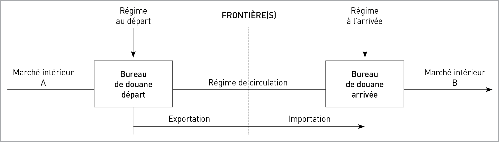
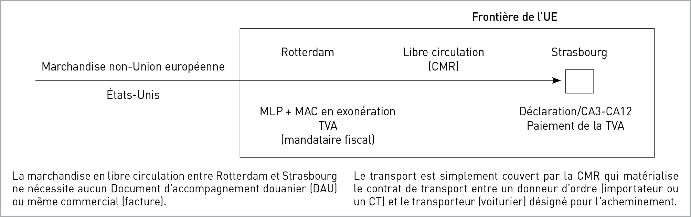
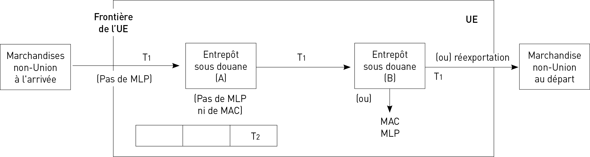
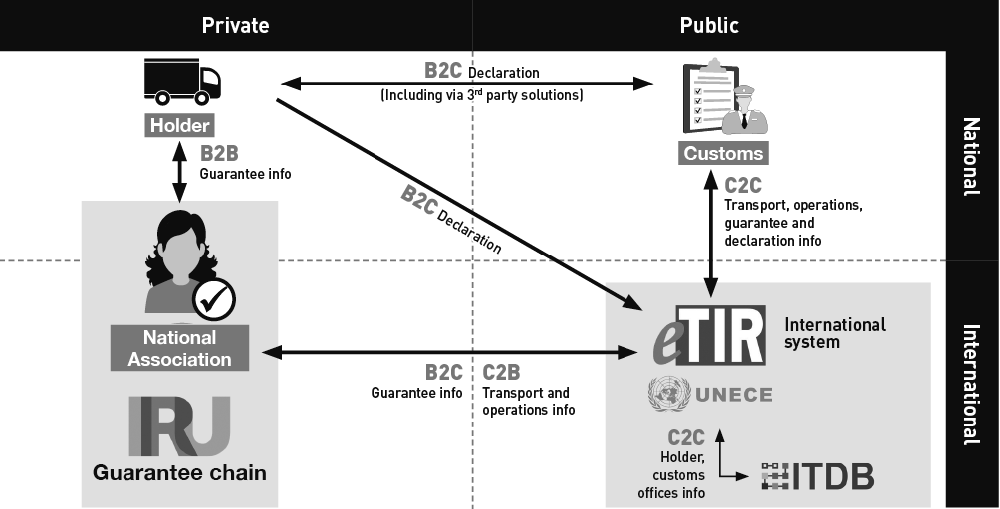

RÉGLEMENTATION DES TRANSPORTS ROUTIERS INTERNATIONAUX
C 2
Le transport international routier diffère notablement du transport national, en particulier sur le plan documentaire.
L’abolition des frontières fiscales dans le cadre du marché unique entre les États membres de l’Union européenne (UE) depuis le 1er janvier 1993 a eu pour effet de supprimer la plupart des formalités et des contrôles liés aux échanges de biens, les nouveaux pays entrants bénéficiant du même régime.
La réalisation du Grand marché intérieur au 1er janvier 1993 nous impose donc aujourd’hui de distinguer les transports nationaux des :
– transports internationaux réalisés au sein de l’Union européenne ;
– transports internationaux avec les pays tiers à l’UE.
Dans les deux cas, un soin particulier sera apporté à la documentation du véhicule, du contrat de transport et du régime douanier de la marchandise, les trois étant matérialisés par :
– les titres d’exploitation ;
– les titres de transport ;
– les documents de douane.
Remarque
Le paquet mobilité I (publié au JOUE 31 juill. 2020, n° L 249), est un ensemble de règles issues de l’adoption par les institutions européennes, en juillet 2020, de trois règlements (n° 2020/1054, n° 2020/1055, n° 2020/1056) et d’une directive 2020/1057 qui visent à moderniser les règles européennes d’accès à la profession de transporteur routier et d’accès au marché du transport par route. Les règles révisées visent notamment à mettre un terme à la distorsion de concurrence dans le secteur du transport routier de marchandises et à offrir de meilleures conditions de travail aux conducteurs. Les textes adoptés en juillet 2020, seront applicables selon un calendrier (certaines dispositions de ces textes en août 2020 et pour d’autres en 2021, 2022, 2023, 2024, 2025 et 2026). Ils vont notamment modifier :
– les règles en matière de temps de conduite, de repos (août 2020) et d’utilisation des tachygraphes ;
– les conditions de détachement des conducteurs ;
– les règles relatives à l’accès à la profession et au marché (conditions d’accès à la profession, les règles du cabotage, …).
RÈGLES ADMINISTRATIVES
LES TITRES D’EXPLOITATION
1
RÉGLEMENTATION DES TRANSPORTS ROUTIERS INTERNATIONAUX
C 4
Les autorisations de transport sont exigées par les pays pour emprunter leur territoire.
On distingue quatre catégories d’autorisations :
b La licence communautaire : pour les transports internationaux et le transit à l’intérieur de l’espace économique européen.
b L’autorisation multilatérale FIT (CEMT) pour les transports internationaux hors de l’Union européenne (réservée aux transports publics).
b L’autorisation bilatérale, pour les transports internationaux hors de l’Union européenne (disponible pour les transports pour compte propre et les transports publics).
b L’autorisation étrangère, réservée aux pays non-signataires du FIT (exemple la Syrie).
1.1 Les Licences Communautaires
Les transports pour compte d’autrui entre États membres de l’UE s’effectuent sous couvert d’une licence communautaire, selon les dispositions du règlement (CE) n° 1072/2009 du 21 octobre 2009, entré en vigueur le 4 décembre 2011.
Pays membres de l’UE :
Allemagne (D) Italie (I)
Autriche (A) Lettonie (LV)
Belgique (B) Lituanie (LT)
Bulgarie (BG) Luxembourg (L)
Chypre (CY) Malte (M)
Croatie (CRO) Pays-Bas (NL)
Danemark (DK) Pologne (PL)
Espagne (E) Portugal (P)
Estonie (EST) République tchèque (CZ)
Finlande (FIN) Roumanie (RO)
France (F) Slovaquie (SK)
Grèce (GR) Slovénie (SLO)
Hongrie (H) Suède (S)
Irlande (IRL)
La licence communautaire, dans le cadre d’accords internationaux, est également valable dans certains pays hors de l’Union européenne :
– en Norvège, Islande et Liechtenstein (pays membres de l’AELE, Accord européen de libre échange) : ces pays forment, avec les 27 pays de l’UE, l’Espace économique européen (EEE). La licence communautaire est utilisée dans le cadre de l’EEE depuis 1995 ;
– en Suisse (pays membre également de l’AELE mais pas de l’EEE) : la Suisse n’étant pas membre de l’EEE, un accord a été signé avec l’UE au 1er juin 2002. Attention : cet accord ne permet pas le cabotage. Les transporteurs suisses ne disposeront pas d’une licence communautaire mais d’un document équivalent suisse ;
– au Royaume-Uni : les transports publics entre pays de l’UE et le Royaume-Uni s’effectuent sous couvert de la licence communautaire. Les transporteurs britanniques, quant à eux, peuvent effectuer des transports routiers de marchandises à destination de la France sous couvert d'une licence du Royaume-Uni pour la Communauté. (accord de commerce et de coopération entre l’Union européenne et la Communauté européenne de l’énergie atomique, d’une part, et le Royaume-Uni de Grande-Bretagne et d’Irlande du Nord, d’autre part : art 462).
Ces licences sont :
– gratuites ;
– incessibles ;
– délivrées par la Dreal au transporteur établi en France qui a son siège social dans la région concernée, et satisfaisant aux quatre critères d’accès à la profession (établissement, capacité professionnelle, honorabilité, capacité financière) ou établi dans l’un des pays membre ;
– valables 10 ans maximum (renouvelables).
La DREAL délivre à l’entreprise autant de copies conformes que de véhicules déclarés. La communication des immatriculations des véhicules utilisés en temps réel est obligatoire (C. transp., art. R. 3411-16). Les copies conformes sont numérotées.
Le règlement (CE) n° 1072/2009 s’applique aux transports internationaux de marchandises par route pour compte d’autrui pour les trajets effectués sur le territoire de la Communauté par des transporteurs établis dans un État membre.
Certains transports sont libéralisés, le règlement (CE) n° 1072/2009, chapitre 1, article 1, fixe 5 catégories dispensées de l’obligation de licence communautaire :
– les transports postaux effectués dans le cadre d'un régime de service universel ;
– les transports de véhicules endommagés ou en panne ;
– les transports de marchandises effectués avec des véhicules dont la masse en charge autorisée ne dépasse pas 2,5 t.
Remarque
Lorsqu’une entreprise déclare souhaiter exécuter dans l’EEE des transports internationaux avec des véhicules d’un PMA supérieur à 2,5 tonnes et inférieur ou égal à 3,5 tonnes, elle détient la licence communautaire comportant la mention : « ≤ 3,5 t » prévue par le second alinéa du paragraphe 4 de l’article 4 du règlement (CE) précité. (Arrêté du 16 novembre 1999 relatif aux titres administratifs de transport qui doivent être détenus par les entreprises effectuant en France un transport routier de marchandises).
– les transports pour compte propre (les véhicules automobiles utilisés pour ce transport sont conduits par le personnel employé par l’entreprise ou mis à la disposition de celle-ci conformément à une obligation contractuelle) ;
– les transports de médicaments, d’appareils et d’équipements médicaux, ainsi que d’autres articles nécessaires
Règles administratives - Les titres d'exploitation
C 5
en cas de secours d’urgence, notamment en cas de catastrophes naturelles.
à cette liste de transports libéralisés, il y a lieu d’ajouter les transports combinés (« rail-route », « mer-route », « fleuve-route ») (Direc. n° 92/106, 7 déc. 92, JOCE n° L. 368, 17 déc. 92).
La licence communautaire permet donc d’effectuer :
– les transports entre États membres de l’EEE (exemple 1) ;
– le transit dans les pays de l’EEE, s’agissant de transport à destination ou au départ de pays n’appartenant pas à l’EEE et pour lesquels une autorisation de transport international sera nécessaire (exemples 2 et 3) ;
– le cabotage dans les pays de l’EEE.
Exemple 1
Belgique, Allemagne, Danemark, Norvège :
– une licence communautaire.
Exemple 2
France, Allemagne, Pologne, Biélorussie :
– une licence communautaire + une autorisation bilatérale de transport biélorusse.
Exemple 3
France, Allemagne, Pologne, Biélorussie, Russie :
– une licence communautaire + une autorisation bilatérale de transit biélorusse + une autorisation bilatérale de transport russe.
1.1.1 LE CABOTAGE
Le cabotage est la faculté accordée à un transporteur de l’Espace économique européen, non établi en France, titulaire d’une licence communautaire, de réaliser un transport intérieur sur le territoire national à titre temporaire. Pendant longtemps, en Europe, les transports intérieurs sont restés une activité de transport réalisée par des nationaux ou, plus exactement, par des résidents. Or, cette situation était incompatible avec les notions de marché unique et de liberté de prestation de services. Les instances européennes ont donc admis puis autorisé qu’un transporteur routier de l’Union européenne puisse effectuer des transports intérieurs dans un État membre où il n’est pas établi.
C’est ce que l’on appelle le cabotage.
À l’échelon communautaire, le cabotage routier de marchandises est régi par le règlement (CE) n° 1072/2009 du 21 octobre 2009.
Depuis le 1er juillet 1998, le cabotage est possible au sein des pays de l’UE et des pays de l’EEE (Islande, Liechtenstein, Norvège).
Exemple
Un transport de Rome à Milan par un transporteur français ou de Bordeaux à Strasbourg par un transporteur allemand.
1.1.1.1 Réglementation et principe général
du cabotage
Le règlement (CE) n° 1072/2009 du 21 octobre 2009 établissant des règles communes pour l’accès au marché du transport international de marchandises par route fixe les conditions à respecter pour effectuer des transports de cabotage (art. 8 et 9 de ce règlement).
Ces dispositions ont été mises en œuvre au niveau national par le Code des transports aux articles L. 3421-3 à L. 3421-4, R. 3242-11, R. 3411-13, R. 3421-6, R. 3421-7, R. 3452-43, R. 3452-44 et R. 3452-45. Ce dispositif est complété par l’arrêté du 9 novembre 1999 relatif aux documents de transport ou de location devant se trouver à bord des véhicules de transport routier de marchandises. Une circulaire du 21 juin 2010 précise les conditions d’application de cette nouvelle réglementation.
L’activité de cabotage routier de marchandises est subordonnée à la réalisation préalable d’un transport routier international.
À cette condition, elle peut être pratiquée à titre temporaire par tout transporteur routier pour compte d’autrui établi dans un État partie à l’Espace économique européen, titulaire d’une licence communautaire, et dont le conducteur, s’il est ressortissant d’un pays tiers, est muni d’une attestation de conducteur.
Une fois que les marchandises transportées au cours d’un transport international à destination de l’État membre d’accueil ont été livrées, les transporteurs sont autorisés à effectuer, avec le même véhicule, ou, s’il s’agit d’un ensemble de véhicules couplés, avec le véhicule à moteur de ce même véhicule, jusqu’à trois transports de cabotage consécutifs à un transport international en provenance d’un autre État membre ou d’un pays tiers à destination de l’État membre d’accueil. Le dernier déchargement au cours d’un transport de cabotage avant de quitter l’État membre d’accueil a lieu dans un délai de 7 jours à partir du dernier déchargement effectué dans l’État membre d’accueil au cours de l’opération de transport international à destination de celui-ci.
Exemple
Un transporteur allemand déchargeant son véhicule en région parisienne, à l’issue d’un transport international, le 19 mai à 15 h 00, pourra réaliser trois opérations de cabotage en France pendant la période courant jusqu’au 26 mai à minuit.
Dans ce délai de 7 jours suivant le déchargement du transport international, les transporteurs peuvent effectuer une partie ou l’ensemble des transports de cabotage autorisés
RÉGLEMENTATION DES TRANSPORTS ROUTIERS INTERNATIONAUX
C 6
dans tout état membre, à condition qu’ils soient limités à un transport de cabotage par état membre dans les 3 jours qui suivent l’entrée à vide sur le territoire de cet état membre.
Exemple
Un transporteur tchèque déchargeant son véhicule en Espagne, à l’issue d’un transport international, le 10 juin à 12 h 00 et traversant la frontière franco-espagnole le 12 juin à 16 h 00, pourra réaliser une opération de cabotage en France pendant la période courant jusqu’au 15 juin à minuit.
Un délai de carence de 4 jours entre deux périodes de cabotage doit être respecté.
Le règlement (CE) n° 1072/2009 précise :
« Les transporteurs ne sont pas autorisés à effectuer des transports de cabotage avec le même véhicule ou, s’il s’agit d’un ensemble de véhicules couplés, avec le véhicule à moteur de ce même véhicule dans le même État membre pendant quatre jours à compter de la fin du transport de cabotage effectué dans cet État membre » ;
« Les transports nationaux de marchandises par route effectués dans l’État membre d’accueil par un transporteur non résident ne sont réputés conformes au présent règlement que si le transporteur peut apporter la preuve évidente du transport international qui a précédé ainsi que de chaque transport de cabotage qu’il a effectué par la suite. Si le véhicule a été présent sur le territoire de l’État membre d’accueil au cours de la période de quatre jours précédant le transport international, le transporteur apporte également la preuve irréfutable de tous les transports effectués au cours de ladite période ».
Le règlement (CE) n° 1071/2009 précise quant à lui que pour satisfaire à la condition d’établissement, l’entreprise : « organise l’activité de son parc de véhicules de manière à faire en sorte que les véhicules dont elle dispose et qui sont utilisés pour le transport international retournent dans un centre opérationnel situé dans cet État membre dans un délai maximal de huit semaines après avoir quitté ledit État membre ».
À noter que cette mesure a été annulée par la Cour des justices de l'UE par un jugement rendu le 4 octobre 2024.
Remarque
Les transporteurs routiers de l’Union peuvent effectuer jusqu’à deux trajets en charge sur le territoire du Royaume-Uni pour autant que ces opérations suivent un trajet au départ du territoire de l’Union et soient effectuées dans les sept jours suivant le déchargement, sur le territoire du Royaume-Uni, de marchandises transportées. Les transporteurs britanniques peuvent effectuer un transport de cabotage sur le territoire d’un État membre pour autant que cette opération suive un trajet au départ du territoire du Royaume-Uni et soit effectué dans les sept jours suivant le déchargement, sur le territoire de cet État membre, de marchandises transportées sur ce trajet (accord de commerce et de coopération entre l’Union européenne et la Communauté européenne de l’énergie atomique, d’une part, et le Royaume-Uni de Grande-Bretagne et d’Irlande du Nord, d’autre part : art 462).
1.1.1.2 Règles applicables
aux transports de cabotage
Tout véhicule effectuant une opération de cabotage routier de marchandises doit être accompagné des documents (preuves) permettant de justifier du respect des dispositions qui précèdent. Ces documents attestent du transport international préalable auquel cette activité est subordonnée ainsi que de chaque opération de cabotage réalisée.
Par conséquent, tout conducteur d’un véhicule effectuant une opération de cabotage doit être en possession des documents justificatifs suivants (C. transp., art. R. 3411-13) :
– la lettre de voiture internationale (CMR) relative au transport international, et au transport bilatéral ;
– les lettres de voiture (LV) relatives à chaque opération de cabotage réalisée à leur suite, ainsi que les lettres de voiture internationales de tous les transports réalisés pendant la période de carence de 4 jours.
Lorsqu’un contrat prévoit, pour une même nature de marchandises, plusieurs opérations successives de chargement ou de déchargement entre un même expéditeur et un même destinataire, il peut être établi, une seule lettre de voiture et un état récapitulatif. S’agissant d’une opération de cabotage, cette faculté n’est pas admise. Il en est de même, dans le cas d’une opération de transport réalisée pour le compte d’expéditeurs ou de destinataires multiples (Arr., 9 nov. 99, relatif aux documents de transport ou de location devant se trouver à bord des véhicules de transport routier de marchandises, art. 5 V).
Chacun des documents précités doit préciser, en sus des mentions obligatoires :
– la date de déchargement des marchandises ;
– le numéro d’immatriculation du véhicule moteur ayant effectué le transport.
(Arr., 9 nov. 99, relatif aux documents de transport ou de location devant se trouver à bord des véhicules de transport routier de marchandises, art. 4 III).
Le contrôle de l’activité de cabotage routier de marchandises s’effectue également à partir des données enregistrées par le tachygraphe (C. transp., art. L. 3421-9).
b Assujettissement aux droits et réglementation de l’état membre « d’accueil »
(Règl. (CE) n° 1072/2009, 21 oct. 2009, art 9).
Afin d’assurer une égalité de traitement avec les nationaux, l’exécution des transports de cabotage est soumise, sauf si la législation communautaire en dispose autrement, aux dispositions législatives, réglementaires et administratives en vigueur dans l’État membre d’accueil, en ce qui concerne :
– les conditions régissant le contrat de transport ;
– les poids et dimensions des véhicules routiers ;
– les prescriptions relatives au transport de certaines catégories de marchandises, en particulier les marchandises dangereuses, les denrées périssables et les animaux vivants ;
– les temps de conduite et périodes de repos ;
– la Taxe sur la valeur ajoutée (TVA) sur les services de transport.
Les valeurs des poids et dimensions des véhicules routiers, peuvent, le cas échéant, dépasser les valeurs applicables dans l’état membre d’établissement du transporteur, mais elles ne peuvent en aucun cas dépasser les limites fixées par l’État membre d’accueil pour le trafic national ou les caractéristiques techniques mentionnées dans les justificatifs visées à l’article 6, paragraphe 1, de la directive n° 96/53/CE du Conseil du 25 juillet 1996 fixant, pour certains véhicules
Règles administratives - Les titres d'exploitation
C 7
routiers circulant dans la Communauté, les dimensions maximales autorisées en trafic national et international et les poids maximaux autorisés en trafic international.
Les dispositions législatives, réglementaires et administratives sont appliquées aux transporteurs non-résidents dans les mêmes conditions que celles qui sont imposées aux transporteurs établis dans l’État membre d’accueil, afin d’empêcher toute discrimination fondée sur la nationalité ou le lieu d’établissement.
Concernant la TVA, c’est le client bénéficiaire du transport qui est redevable (le preneur). Le transporteur étranger doit émettre une facture hors TVA et le client assujetti en France paye la TVA aux services fiscaux français.
1.1.1.3 Sanctions
Le cabotage illégal est puni de 1 an de prison et 15 000 € d’amende maximum, avec possibilité de se voir interdire le territoire national pendant 1 an au plus (C. transp., art. L. 3452-6). De plus, dans ce cas, le véhicule peut également être immobilisé (C. transp, art. L. 3451-2). Quant au cabotage irrégulier (inobservation du caractère temporaire), c’est également un délit passible de 15 000 € au maximum (C. transp., art. L. 3452-7-2).
Constitue une contravention de la 5e classe, le fait (C. transp., art. R. 3452-44) :
– de ne pas être en mesure de présenter la lettre de voiture internationale justifiant le transport international préalable ;
Constitue une contravention de la 4e classe, le fait (C. transp., art. R. 3452-46-1) :
– de présenter des lettres de voiture renseignées de façon incomplète, illisible, erronée ou effaçable.
Les entreprises expéditrices, transitaires, contractantes ou sous-traitantes qui font réaliser des services de cabotage par une entreprise de transport routier de marchandises non établie en France veillent à ce que les services de transports qu’elles commandent respectent les règles de cabotage définies dans le règlement (CE) n° 1072/2009 du Parlement européen et du Conseil du 21 octobre 2009 établissant des règles communes pour l’accès au marché du transport international de marchandises par route. (C. transp., art. L. 3421-4)
Les entreprises donneurs d’ordre qui ne respectent pas cette législation sont passibles d’une amende de 15 000 €, en application de l’article L. 3452-8 du Code des transports.
L’entreprise qui fait réaliser par un transporteur routier des opérations de cabotage routier de marchandises doit conserver, pendant une durée minimale de 2 ans, les contrats de transport ou autres documents justificatifs, incluant tout document dématérialisé équivalent, concernant les véhicules utilisés (C. transp., art. R. 3421-6).
Est puni de l’amende prévue pour les contraventions de la 5e classe le fait de ne pas présenter, à toute réquisition des agents de contrôle et, de ne pas conserver dans l’entreprise ces documents (C. transp., art. R. 3452-45).
1.1.1.4 Attestation de détachement
Au regard des spécificités du secteur routier et du caractère mobile de ses travailleurs, il a été décidé de prévoir un cadre juridique spécifique et adapté pour les conducteurs routiers au niveau européen. La directive n° 2020/1057 ou « lex specialis » est l'une des composantes du Paquet mobilité I, adopté en juillet 2020. La loi du 8 octobre 2021 portant adaptation du droit de l'Union a transposé cette directive dans la partie législative du Code des transports. Pris en application de cette loi, le décret n° 2022-104 du 1er février 2022 modifie les dispositions de la partie réglementaire du même code relatives au détachement des salariés roulants des entreprises de transport routier.
Du fait de la transposition de la directive 2020/1057/UE, l’ordonnance n° 2022-1293 du 5 octobre 2022 et un décret n° 2022-1346 du 22 octobre 2022 modifient les mesures préexistantes prévues par le Code des transports en matière d'attestation de détachement, sans modification des sanctions applicables en matière de détachement.
L'article L. 1261-3 du Code du travail définit le travailleur détaché comme « tout salarié d'un employeur régulièrement établi et exerçant son activité hors de France et qui, travaillant habituellement pour le compte de celui-ci hors du territoire national, exécute son travail à la demande de cet employeur pendant une durée limitée sur le territoire national. »
b Détachement non applicable aux opérations bilatérales et au transit
Les règles de détachement ne s’appliquent pas aux opérations de transport bilatérales (transports depuis l’état membre d’où provient le conducteur vers un autre pays et vice-versa), ni lorsque le conducteur transite sur le territoire national sans effectuer de chargement ou de déchargement de marchandises.
Deux autres exceptions sont par ailleurs prévues lorsque le véhicule est équipé d'un tachygraphe intelligent respectant l'exigence d'enregistrement des activités de franchissement des frontières et des activités supplémentaires (activité de chargement ou de déchargement) (C. transp., art. L. 1332-3) :
– pour les opérations de transport bilatérales de marchandises lorsque le conducteur procède aussi à une activité de chargement ou de déchargement dans les états membres ou pays tiers qu’il traverse, à condition de ne pas charger et décharger les marchandises dans le même état membre.
Exemple
Le conducteur, salarié d’une entreprise située en France, effectue un transport bilatéral de Lille à Cologne (Allemagne). S’il effectue une opération de chargement en Belgique, il ne sera pas question de détachement en Belgique.
– si une opération de transport bilatérale démarrant dans l’état membre d’établissement, durant laquelle aucune activité supplémentaire n’est effectuée, est suivie d’une opération de transport bilatérale vers l’état membre d’établissement, l’exception s’appliquera à deux activités supplémentaires de chargement ou de déchargement au maximum.
Exemple
Le conducteur, salarié d’une entreprise située en Pologne, effectue un transport bilatéral de Pologne en Espagne (aller). Au retour (Espagne – Pologne), il effectue une opération de
RÉGLEMENTATION DES TRANSPORTS ROUTIERS INTERNATIONAUX
C 8
déchargement en France (25 %), une opération de déchargement en Allemagne (25 %) et décharge le reste en Pologne. Il ne sera pas question de détachement en France et en Allemagne.
b Détachement applicable aux opérations de cabotage et aux opérations non bilatérales
Lorsqu’un conducteur effectue d’autres types d’opérations, notamment des transports de cabotage ou des opérations de transport international non bilatérales, il existe un lien suffisant avec le territoire de l’état membre d’accueil. Les règles en matière de détachement sont par conséquent applicables.
En cas de cabotage, toute l’opération de transport se déroule dans un état membre d’accueil et le service est donc étroitement lié au territoire de l’état membre d’accueil.
Une opération de transport international non bilatérale est, quant à elle, caractérisée par le fait que le conducteur effectue un transport international en dehors de l’état membre d’établissement de l’entreprise d’envoi. Les services fournis ont donc un lien avec les états membres d’accueil concernés plutôt qu’avec l’état membre d’établissement.
b Pas de détachement en cas de transport combiné
Enfin, un conducteur n’est pas considéré comme détaché lorsqu’il effectue le trajet routier initial ou final d’une opération de transport combiné, si le trajet routier, pris isolément, se compose d’opérations de transport bilatérales.
b Formalités applicables en matière de détachement
Dispositions applicables aux opérations de transport réalisées au moyen de véhicules n’entrant pas dans le champ d’application du règlement (CE) n° 561/2006.
Un employeur établi hors de France peut détacher temporairement des salariés sur le territoire national, à condition qu’il existe un contrat de travail entre cet employeur et le salarié et que leur relation de travail subsiste pendant la période de détachement.
Le détachement est réalisé :
– soit pour le compte de l’employeur et sous sa direction, dans le cadre d’un contrat conclu entre celui-ci et le destinataire de la prestation établi ou exerçant en France ;
– soit entre établissements d’une même entreprise ou entre entreprises d’un même groupe ;
– soit pour le compte de l’employeur sans qu’il existe un contrat entre celui-ci et un destinataire (C. trav., art. L. 1262-1).
Avant le début de la première opération de détachement, l’employeur établi à l’étranger doit transmettre une attestation de détachement rédigée en français, en utilisant le télé-service SIPSI du ministère chargé du Travail (C. transp., art. R. 1331-2 et R. 1331-7). L’attestation de détachement sera valide pour la durée indiquée par l’entreprise, dans la limite d’une durée maximale de 6 mois à compter de sa date d'établissement (C. transp., art. R. 1331-2). Un exemplaire est remis au salarié détaché afin d’être conservé à bord du véhicule et présenté lors des contrôles (C. transp., art. R. 1331-7).
À noter qu’une copie du contrat de travail doit être à bord du véhicule (C. transp., art. R. 3411-13).
Est puni de l'amende prévue pour les contraventions de la 5e classe :
Le fait pour un chef d'une entreprise établie hors de France qui détache des salariés roulants ou navigants que l'attestation de détachement ne soit pas à bord du moyen de transport avec lequel est assuré le service.
L’entreprise qui détache des salariés en France doit désigner son représentant sur le territoire national. Celui-ci est chargé d’assurer la liaison avec les agents de contrôle pendant toute la durée du détachement ainsi que pendant les 18 mois qui suivront (C. transp., art. R. 1331-1 à R. 1331-5). Il doit conserver les documents pouvant être contrôlés par l’inspecteur du travail (bulletin de salaire, tout document attestant du paiement effectif du salaire, etc.) (C. transp., art. R. 1331-4).
Le donneur d'ordre est réputé avoir procédé aux vérifications concernant l’attestation de détachement et la désignation d’un représentant de l'entreprise sur le territoire national dès lors qu'il s'est fait remettre, avant le début du détachement d'un salarié, une copie de l'attestation de détachement. Si l’employeur installé à l’étranger ne remet pas une copie de la déclaration de détachement, le donneur d’ordre doit effectuer au moyen du téléservice SIPSI, une déclaration subsidiaire de détachement dans les 48 heures suivant le début du détachement (C. transp., art. R. 1331-6 et C. trav., art. L. 1262-4-1).
L’employeur est soumis, pendant la durée du détachement de ses salariés en France, aux règles françaises (Code du travail, lois, règlements, conventions collectives…) en matière de rémunération, d’égalité professionnelle, de durée du travail, de conditions de travail… (C. trav., art. L. 1262-4).
La méconnaissance de ses obligations par l’employeur qui détache un ou plusieurs salariés est passible d’une amende administrative. Le montant de l’amende est d’au plus 4 000 € par salarié détaché et d’au plus 8 000 € en cas de réitération dans un délai de 2 ans à compter du jour de la notification de la première amende. Le montant total de l’amende ne peut être supérieur à 500 000 € (C. trav., art. L. 1264-3).
Dispositions applicables aux opérations de transport réalisées au moyen de véhicules entrant dans le champ d’application du règlement (CE) no 561/2006.
Les entreprises établissent une déclaration de détachement, au plus tard au début du détachement, au moyen d’un formulaire standard multilingue de l’interface publique connectée au système d’information du marché intérieur « IMI » institué par le règlement (UE) no 1024/2012 du Parlement européen et du Conseil du 25 octobre 2012.
La déclaration de détachement comporte les informations suivantes :
– L’identité de l’entreprise de transport, au moins sous la forme du numéro de la licence communautaire, s’il est disponible ;
– Les coordonnées d’un gestionnaire de transport ou d’une autre personne de contact dans l’État d’établissement chargée d’assurer la liaison avec les autorités nationales compétentes et de transmettre et de recevoir des documents ou avis. Cette désignation se substitue à l'obligation de désignation d'un représentant de l'entreprise prévue au II de l'article L. 1262-2-1 du Code du travail ;
Règles administratives - Les titres d'exploitation
C 9
– L’identité, l’adresse du lieu de résidence et le numéro du permis de conduire du conducteur ;
– La date de début du contrat de travail du conducteur, et le droit applicable à ce contrat ;
– Les dates prévues pour le début et la fin du détachement ;
– La plaque minéralogique des véhicules à moteur ;
– La précision de la nature du transport dont il s’agit : transport de marchandises, transport international ou transport de cabotage.
Aux fins du contrôle, l’entreprise tient à jour les déclarations de détachement dans l’interface publique connectée au système d’information du marché intérieur « IMI » (C. transp., art. R. 1332-2).
L’entreprise veille à ce que le conducteur ait à sa disposition, sur support papier ou en format électronique, les documents suivants :
– Une copie de la déclaration de détachement mentionnée à l’article R. 1332-2 ;
– La preuve des opérations de transport attestant clairement le transport international à destination de l’État membre d’accueil ainsi que chaque transport de cabotage qu’il a effectué par la suite
– Les enregistrements du tachygraphe, et en particulier les symboles pays des États membres où le conducteur a été présent lorsqu’il a procédé aux opérations de transport routier international ou aux transports de cabotage, conformément aux exigences en matière d’enregistrement et de conservation des relevés au titre des règlements (CE) n° 561/2006 et (UE) no 165/2014.
L’entreprise veille à ce que le conducteur se trouvant dans l’un des cas non soumis aux règles de détachement (transit, transport bilatéral, transport combiné) ait à sa disposition, sur support papier ou en format électronique, les documents justificatifs.
Le conducteur conserve les documents à bord du véhicule avec lequel est assuré le transport et les présente à la demande des agents de contrôle (C. transp., art. R. 1332-3).
1.1.2 attestation de conducteur
« pays tiers »
En plus de l’attestation de détachement, le cas échéant, l’entreprise de transport public routier de marchandises ou de location de véhicules industriels avec conducteur destinés au transport de marchandises, inscrite au registre électronique national des entreprises de transport par route, qui effectue des transports internationaux ou de cabotage sous le couvert d’une licence communautaire doit, lorsqu’elle emploie ou utilise des conducteurs ressortissants d’un état tiers à l’Espace économique européen, demander auprès de la DREAL, sous l’autorité du préfet de la région où elle est inscrite, la délivrance d’une attestation de conducteur pour chacun de ces conducteurs (Arr., 11 mars 2003 modifié, relatif à l’attestation de conducteur ressortissant d’un état tiers instaurée par le règlement (CE) du Parlement européen et du Conseil du 1er mars 2002, art. 1).
Un conducteur ressortissant d’un pays tiers est un conducteur qui n'a pas la nationalité d'un des pays de l’Espace économique européen (ex. : Russie, etc.).
L’emploi irrégulier de conducteurs ressortissants d’États tiers, travaillant dans des conditions précaires et sous-payés, engendre d’importantes distorsions de concurrence entre les transporteurs qui usent de telles pratiques et ceux qui recourent uniquement à des conducteurs employés légalement. L’attestation permet de savoir si un conducteur ressortissant d’un État tiers à l’Espace économique européen est employé légalement par une entreprise de transport public routier de marchandises.
Transports sous licence communautaire concernés :
– transports internationaux ;
– cabotage.
La demande est accompagnée le cas échéant d’une copie, pour chacun des conducteurs ressortissants d’un État tiers à l’Union européenne, d’un des titres ou diplômes prévus par l’arrêté mentionné à l’article R. 3314-3 du Code des transports ou de formation du certificat de qualification prévu à l’article R. 3314-27 du même code, justifiant de la régularité de la situation du conducteur désigné au regard des obligations de qualification initiale ou de formation continue. Lorsque la demande est accompagnée d’une copie de l’un de ces documents justificatifs, le code harmonisé « 95 » de l’Union européenne, prévu à l’annexe I de la directive 2006/126/CE relative au permis de conduire, est apposé par l’autorité administrative dans la section de l’attestation réservée aux observations.
La demande comprend notamment une déclaration sur l’honneur certifiant pour chacun des conducteurs ressortissants d’un état tiers à l’Espace économique européen qu’il est employé légalement par l’entreprise ou mis légalement à sa disposition, conformément aux dispositions législatives, réglementaires et conventionnelles relatives aux conditions d’emploi et de formation professionnelle des conducteurs applicables en France.
Lorsque le conducteur est utilisé en tant qu’intérimaire, l’entreprise de transport se fait remettre par l’entreprise de travail temporaire cette attestation sur l’honneur.
La demande est établie avec un formulaire Cerfa n° 12726, le préfet de région délivre à l’entreprise une attestation pour chaque conducteur ressortissant d’un état tiers, ainsi qu’une photocopie certifiée conforme de celle-ci, l’attestation est la propriété du transporteur. Elle est mise à la disposition du conducteur désigné dans celle-ci lorsqu’il est à bord d’un véhicule effectuant un transport international ou de cabotage sous le couvert de la licence communautaire délivrée au transporteur. La copie certifiée conforme de l’attestation est conservée dans les locaux du transporteur. Sa validité ne peut excéder 5 ans (Règl. (CE) n° 1072/2009, art 5, & 7).
L’attestation peut être retirée :
– si elle a été obtenue sur la base d’une fausse déclaration ou de faux documents ;
– en cas d’infractions relative à toute utilisation abusive.
En outre, l’entreprise de transport restitue l’attestation d’emploi du conducteur et sa copie conforme au préfet qui les a délivrées dès que cesse sa relation de travail avec le conducteur concerné ou que ce dernier n’est plus utilisé par l’entreprise en tant que conducteur.
RÉGLEMENTATION DES TRANSPORTS ROUTIERS INTERNATIONAUX
C 10
Précisons toutefois que le règlement (CE) n° 1072/2009 du Parlement européen et du conseil du 21 octobre 2009 établissant des règles communes pour l’accès au marché du transport international de marchandises par route n’impose pas cette attestation au conducteur qui est un résident de longue durée au sens de la directive 2003/109/CE du Conseil du 25 novembre 2003 relative au statut des ressortissants de pays tiers résidents de longue durée ; dans ce cas, le conducteur détient tout document établissant sa situation de résident de longue durée (carte de résident, etc. – C. transp., art. R. 3411-13 & 4° et CESEDA, art. L. 426-17).
1.2 Les autorisations MULTILATéRALES Fit/CEMT
Les autorisations multilatérales FIT/CEMT permettent d’effectuer des transports internationaux à destination ou en transit sur le territoire des pays membres du Forum international des transports (anciennement appelé Conférence européenne des ministres des Transports (CEMT). 43 pays participent au système du contingent CEMT/FIT, les 27 pays de l’UE à l’exception de Chypre ainsi que les pays suivants :
|
Albanie |
Géorgie |
Royaume-Uni |
|
Arménie |
Liechtenstein |
Russie |
|
Azerbaïdjan |
Moldavie |
Serbie |
|
Biélorussie |
Monténégro |
Suisse |
|
Bosnie- |
Norvège |
Turquie |
|
Herzégovine |
République |
Ukraine |
Cette liste de pays est fixée à l’annexe III de la Décision du 2 avril 2012 relative aux modèles de licence de transport intérieur et de ses copies conformes pour l’exercice des activités de transport public routier de marchandises et listes des États délivrant des titres administratifs de transport routier de marchandises.
Les autorisations CEMT sont des autorisations multilatérales, émises par la FIT/CEMT, pour le transport international pour compte d’autrui de marchandises par route par des entreprises de transport, établies dans un pays membre de la CEMT, sur la base d’un système de contingent, dans les relations :
– entre pays membres de la CEMT ;
– et/ou en transit par le territoire d’un ou plusieurs pays membre(s) de la CEMT, par des véhicules immatriculés dans un pays membre de la CEMT.
Dans le but de faciliter les transports internationaux et d’obtenir une meilleure utilisation des véhicules, les catégories de transports ci-après désignées sont dispensées de tout régime d’autorisation de transport multilatérale et bilatérale (attention certains pays peuvent émettre des réserves dans leurs pays) :
– transports de véhicules endommagés ou à dépanner et les déplacements de dépanneuses ;
– déplacements à vide d’un véhicule affecté au transport des marchandises et destiné à remplacer un véhicule mis hors d’usage à l’étranger ainsi que le retour du véhicule tombé en panne après réparation ;
– transports de marchandises par véhicule dont le poids total en charge autorisé, y compris celui des remorques, ne dépasse pas 3,5 t ;
– transports d’articles nécessaires aux soins médicaux en cas de secours d’urgence, notamment en cas de catastrophes naturelles, et en cas d’aide humanitaire ;
– transports occasionnels de marchandises à destination ou en provenance des aéroports, en cas de déviations des services ;
– transports d’animaux vivants au moyen de véhicules construits ou aménagés spécialement d’une façon permanente pour assurer le transport d’animaux vivants et admis comme tels par les autorités compétentes des États membres ;
– transports de pièces de rechange et de produits destinés à l’avitaillement des navires de mer et des avions ;
– transports à des fins non commerciales, d’objets et d’œuvres d’art destinés aux expositions et aux foires ;
– transports à des fins non commerciales de matériel, d’accessoires et d’animaux à destination ou en provenance de manifestations théâtrales, musicales, cinématographiques, sportives, de cirques, de foires ou de kermesse, ainsi que ceux destinés aux enregistrements radiophoniques, aux prises de vue cinématographiques ou à la télévision ;
– transports funéraires ;
– transports de marchandises pour compte propre ;
– transports postaux effectués dans le cadre d’un régime de service public ;
– l’acheminement à vide de véhicules nouvellement acquis vers leur lieu de destination finale.
Les autorisations FIT/CEMT sont :
– gratuites ;
– banalisées ;
– annuelles, de couleur verte, valables pour une année calendaire (1er janvier – 31 décembre) ou à court terme, valables 30 jours, de couleur jaune et marquées « autorisations à court terme » ;
– contingentées, délivrées par le préfet de région (Dreal) accompagnées de comptes-rendus (carnet de route). Les autorisations ne sont délivrées que pour les transports pour compte d’autrui et attribuées selon des quotas qui tiennent compte du classement du véhicule en fonction des normes européennes antipollution, organique et sonore.
Ces autorisations permettent à l’issue du premier voyage en charge entre le pays membre d’immatriculation et un autre pays membre, d’effectuer au maximum trois voyages en charge n’impliquant pas le pays membre d’immatriculation du véhicule, après quoi, le véhicule
Règles administratives - Les titres d'exploitation
C 11
doit rejoindre le pays membre d’immatriculation, en charge ou à vide.
Les autorisations multilatérales FIT/CEMT doivent être demandées au moyen d’un formulaire Cerfa n° 11551, adressé à la Direction régionale de l’environnement, de l’aménagement et du logement (Dreal) dont dépend le siège social de l’entreprise. Ce formulaire comprend une déclaration sur l’honneur mentionnant le nombre de conducteurs salariés de l’entreprise inscrits au registre unique du personnel et, s’il y a lieu, le nombre de conducteurs mis à disposition par une ou plusieurs autres entreprises dans le cadre de contrats de location de véhicules avec conducteur et attestant le respect par l’entreprise de ses obligations envers les administrations fiscales et les organismes de Sécurité sociale et d’allocations familiales (Arr., 7 févr. 2002 modifié, relatif aux autorisations de transport routier de marchandises délivrées aux entreprises établies en France dans le cadre du contingent multilatéral de la Conférence européenne des ministres des Transports, art. 4). Le nombre d’autorisations FIT/CEMT pouvant être délivrées est subordonné au nombre de conducteurs inscrits sur le registre unique du personnel ou mis à disposition dans le cadre de contrats de location de véhicules avec conducteur. Toutefois, des autorisations supplémentaires peuvent être délivrées en cours d’année dans la limite du contingent en cas d’augmentation de l’effectif des conducteurs. Les autorisations de transport FIT/CEMT sont délivrées aux entreprises qui exercent leur activité dans le respect des réglementations du transport, du travail et de la sécurité (Arr., 7 févr. 2002, précité, art. 5).
Un contingent d’autorisations est mis chaque année à la disposition d’un pays membre de la CEMT. Les principes de calcul de ce contingent sont déterminés par le groupe sur le transport routier et approuvés par les ministres.
Il existe 3 catégories d’autorisations :
– camions « Euro V sûrs », « EEV sûrs ».
(Les camions « EEV sûrs » ne sont pas considérés dans le contingent multilatéral CEMT comme une catégorie distincte. Les camions « EEV sûrs » opérant avec l’autorisation multilatérale CEMT doivent être accompagnés de l’autorisation CEMT pour la catégorie « Euro V sûr ») ;
– camions « Euro VI sûrs » ;
– autorisations pour les déménagements internationaux (les déménagements internationaux ne sont pas soumis à un contingentement).
Les camions « Euro V sûrs », « EEV sûrs » ou « Euro VI sûrs » doivent être en possession :
– d’une attestation de conformité aux normes techniques concernant les émissions sonores et polluantes et aux normes de sécurité. Cette attestation de conformité est émise une seule fois et ne doit pas être renouvelée, sauf en cas de modification des données de base du véhicule (modèle : voir annexe 4 du manuel FIT/CEMT) ;
– d’une attestation de contrôle technique pour les véhicules qui doivent être contrôlés tous les ans lors du contrôle technique obligatoire (modèle : voir annexe 6 du manuel FIT/CEMT).
Pour faciliter le passage des frontières et sa rapidité, il est en outre vivement recommandé d’arborer à l’avant des camions un macaron, soit magnétique, soit autocollant. Le macaron doit être de couleurs verte (fond) et blanche (tour) et porter en blanc le chiffre « V » pour les camions « Euro V sûrs », les lettres « EEV » pour les camions « EEV sûrs » et le chiffre « VI » pour les camions « Euro VI sûrs ».
Les autorisations ne sont valables que lorsqu’elles sont accompagnées à bord des véhicules des certificats de conformité correspondants.
Le titulaire d’une autorisation multilatérale FIT/CEMT doit tenir un carnet de route. Ce carnet porte le nom du transporteur et n’est pas transférable. Il doit être conservé à bord du véhicule avec l’autorisation multilatérale FIT/CEMT et les certificats camion « Euro V sûrs », « EEV sûrs » ou « Euro VI sûrs ». Le compte-rendu d’exécution de transport doit être établi par ordre chronologique des divers voyages en charge entre chaque endroit où un chargement/déchargement a eu lieu ainsi que pour chaque voyage à vide, incluant le passage d’une frontière. Les feuilles de compte-rendu sont gardées dans le carnet de route jusqu’à ce que la période de validité indiquée sur l’autorisation expire. Les copies de ces feuilles sont détachées et remises à l’autorité ou l’organisme compétent dans les 2 semaines qui suivent le mois de calendrier pour une autorisation annuelle ou à la fin de sa période de validité pour une autorisation de courte durée.
La délivrance de nouvelles autorisations de transport du contingent multilatéral est subordonnée à la restitution par le transporteur des carnets de comptes-rendus dûment complétés pour chaque voyage effectué en charge ou à vide (Arr., 7 févr. 2002, précité, art. 6).
Exemple 1
Transport au départ de l’Allemagne à destination de la Bosnie-Herzégovine : autorisation multilatérale FIT/CEMT, permettant le transport entre ces deux états membres et le transit par l’Autriche, la Slovénie et la Croatie.
Exemple 2
Transport au départ de la Turquie à destination de l’Allemagne : autorisation multilatérale FIT/CEMT, permettant le transport entre ces deux états membres et le transit par la Bulgarie, Roumanie, Hongrie et l’Autriche.
remarque
Une autorisation FIT/CEMT ne permet pas le cabotage.
Nota : ces autorisations multilatérales FIT/CEMT ne dispensent pas des autres autorisations éventuellement requises pour les transports spécifiques (matières dangereuses, transports exceptionnels) et ne permettent pas d’exécuter un transport entre un pays membre de la Conférence et un pays n’en faisant pas partie.
Un véhicule effectuant un transport entre, par exemple, la Norvège (pays membre de la CEMT participant au système
RÉGLEMENTATION DES TRANSPORTS ROUTIERS INTERNATIONAUX
C 12
du contingent) et l’Iran comme destination finale (pays non membre de la CEMT, mais frontalier d’un pays membre) ne peut pas être couvert pour ce transport d’une autorisation FIT/CEMT. Par contre les autorisations sont valables si les transports transitent par un pays tiers (par exemple, une marchandise chargée en Norvège, devant être déchargée en Russie et transitant par l’Iran). (Contingent multilatéral CEMT : Manuel d’utilisation, janvier 2022).
1.3 Les autorisations bilatérales
Elles résultent d’accords bilatéraux conclus entre la France et les états tiers à l’Espace économique européen élargi à la Confédération suisse. Elles permettent la réalisation de transports internationaux de marchandises entre la France et l’état signataire de l’accord. Les contingents annuels d’autorisations sont fixés initialement dans l’accord bilatéral puis réexaminés en commission mixte à la demande de l’un ou l’autre des deux états signataires. Les accords bilatéraux prévoient le plus souvent la possibilité de réaliser des transports triangulaires (c’est-à-dire au départ ou à destination d’un troisième pays) avec obligation de retransiter par le pays d’immatriculation du véhicule.
L’annexe 4 de la « Décision du 2 avril 2012 relatif aux modèles de licence de transport intérieur et de ses copies conformes pour l’exercice des activités de transport public routier de marchandises et listes des États délivrant des titres administratifs de transport routier de marchandises » fixe la liste des états avec lesquels la France a conclu un accord bilatéral, ou un acte équivalent, pour la délivrance des autorisations de transport bilatérales :
– Albanie, Algérie, Andorre, Autriche (transports triangulaires), Biélorussie, Bosnie-Herzégovine, Iran, Israël, Kazakhstan, République de Macédoine, Maroc, Moldavie, Russie, Serbie, Tunisie, Turquie, Ukraine. À cette liste, il y a lieu de rajouter le Brésil (Décret n° 2017-76 du 25 janvier 2017) et l’Ouzbékistan (Décret n° 2023-612 du 17 juillet 2023).
Les autorisations de transport sont délivrées aux entreprises qui justifient de leur activité de transport international, des moyens en matériel et en personnel notamment de conduite pour assurer cette activité, du respect des réglementations du transport, du travail et de la sécurité, des obligations envers les organismes fiscaux et sociaux ainsi que du règlement des cotisations au CNT et aux comités consultatifs du transport (Arr., 12 juill. 2000 modifié, relatif aux autorisations bilatérales pour les transports routiers internationaux de marchandises délivrées aux entreprises résidant en France, art. 5).
Les autorisations de transport sont demandées au moyen du formulaire Cerfa n° 11558 établi par le responsable légal de l’entreprise, qui comprend une déclaration sur l’honneur mentionnant le nombre de conducteurs salariés de l’entreprise inscrits au registre unique du personnel et, s’il y a lieu, le nombre de conducteurs mis à disposition par une ou plusieurs autres entreprises dans le cadre de contrats de location de véhicules avec conducteur, et attestant le respect, par l’entreprise, de ses obligations envers les administrations fiscales et les organismes de Sécurité sociale et d’allocations familiales (Arr., 12 juill. 2000, précité, art. 4).
Ces autorisations sont :
– gratuites ;
– contingentées, délivrées par le préfet de région (DREAL) où l’entreprise a son siège, accompagnées de comptes-rendus de voyages (carnet de route) lorsque l’accord bilatéral le prévoit (Arrêté du 16 novembre 1999 relatif aux titres administratifs de transport art 11). La délivrance de nouvelles autorisations de transport est subordonnée à la restitution par l’entreprise, au terme de leur période de validité, des comptes-rendus de voyages, effectués en charge ou à vide, des autorisations précédentes ;
– banalisées, c’est-à-dire non affectées à un véhicule en particulier.
Ces autorisations couvrent aussi bien les transports pour compte d’autrui que les transports pour compte propre.
Elles peuvent être :
– soit des autorisations au voyage, valables pour un seul voyage aller-retour ; leur validité est de 3 mois à compter de la date de délivrance par l’autorité nationale compétente ;
– soit des autorisations à temps, valables 1 an et pour un nombre indéterminé de voyages ;
– soit des autorisations dites pays tiers permettant d’effectuer des trafics triangulaires sans obligation de retransiter par le pays d’immatriculation.
Certaines autorisations peuvent prévoir des prescriptions techniques minimales auxquelles doivent répondre les véhicules utilisés pour l’exécution des transports internationaux, et, dans ce cas, des certificats de conformité devront être fournis (Arr., 12 juill. 2000, précité, art. 3).
On distingue :
– les autorisations bilatérales de transport ;
– les autorisations bilatérales de transit.
1.3.1 Les autorisations bilatérales
de transport
à partir du pays d’origine, elles permettent un transport international, c’est-à-dire un déchargement et un rechargement avec le pays signataire.
Exemples :
France Biélorussie
Dans ce cas il faut une autorisation bilatérale de transport biélorusse. Le parcours en France, Allemagne et Pologne est couvert par la licence communautaire.
Au retour, il sera possible de charger un fret à destination de la France ou de quitter à vide le territoire biélorusse, recharger
Règles administratives - Les titres d'exploitation
C 13
en Pologne par exemple et décharger en France, ce transport s’effectuant sous couvert de la licence communautaire.
C’est l’autorisation utilisée à l’aller qui sert au retour.
Portugal Biélorussie
Dans ce cas il faut une autorisation bilatérale de transport biélorusse. Le parcours en Espagne, France, Allemagne et Pologne est couvert par la licence communautaire.
1.3.2 Les autorisations bilatérales
de transit
Elles ne permettent normalement que de traverser le pays concerné, sans autoriser de déchargement ou de rechargement.
Il faut autant d’autorisations que de pays concernés, à l’exception des pays libres d’accès.
France, Allemagne, Pologne, Biélorussie, Russie :
Dans ce cas il faut une autorisation bilatérale de transport russe et une autorisation bilatérale de transit biélorusse.
Au retour, il sera possible de charger un fret à destination de la France depuis la Russie par contre ce ne sera pas possible depuis la Biélorussie.
Le parcours en Pologne, Allemagne et France est couvert par la licence communautaire.
1.3.3 les autorisations étrangères
Lorsqu’un transporteur français souhaite réaliser un transport vers un pays avec lequel aucun accord n’existe (cas de la Syrie), il doit se procurer une autorisation étrangère auprès de l’ambassade ou du consulat du pays concerné.
1.4 Circulation des véhicules et tarification routière
En Europe, les taxes routières et les péages prélevés sur les poids lourds transportant des marchandises varient considérablement selon les États membres de l’UE, à la fois au niveau du montant prélevé et des systèmes de taxation.
Les législateurs européens ont trouvé un compromis sur la directive « Eurovignette », qui fixe des règles communes à tous les États membres concernant la tarification applicable aux poids lourds sur les infrastructures du réseau routier transeuropéen (Direc. 2011/76/UE du Parlement européen et Conseil du 27 sept. 2011 modifiant la directive 1999/62/CE, relative à la taxation des poids lourds pour l’utilisation de certaines infrastructures). Le principal objectif est d’adapter le cadre de tarification des transports routiers pour refléter les véritables coûts pour la société et l’environnement en instaurant les principes de « l’usager payeur » et du « pollueur payeur ».
Les directives « Eurovignette » permettent aux États membres de prélever des taxes sur les poids lourds, des péages et des droits d’usage pour l’utilisation de certaines infrastructures. Elles s’appliquent aux véhicules ayant un poids total autorisé d’au moins 12 t mais elles visent également les véhicules de 3,5 t ou plus. Toutefois, les États membres pourront exonérer de péage les véhicules de moins de 12 t s’ils le jugent nécessaire, par exemple si l’application de péages devait créer des effets négatifs importants ou des coûts administratifs excessifs.
Le principal élément nouveau de la directive est de permettre aux états membres de tenir compte des « coûts externes » du transport routier dans le montant des péages. Après des débats houleux, il a finalement été décidé que ces « coûts externes » pouvaient comprendre les coûts liés à la congestion, la pollution environnementale, les nuisances sonores, les dégâts sur les paysages, les coûts sociaux comme la santé et les coûts indirects d’accidents non couverts par les assurances.
Les États membres pourront donc appliquer aux poids lourds une redevance pour coûts externes, en complément de la redevance d’infrastructure existante destinée au recouvrement des coûts de construction, d’entretien, d’exploitation et de développement des infrastructures routières. Il est même prévu que les états membres puissent majorer cette taxe pendant les périodes de pointes de circulation.
L’écotaxe poids lourds qui devait initialement entrer en vigueur en juillet 2013, application de la directive Eurovignette, a été repoussée à deux reprises avant d’être suspendue. Le gouvernement a présenté en Conseil des ministres, le 26 juillet 2023, une ordonnance permettant de réintroduire un dispositif comparable à l’écotaxe poids lourds, mais à l’échelle régionale et de manière volontaire.
Une ordonnance du 26 mai 2021 confère à la Collectivité européenne d’Alsace (CeA) la compétence pour instaurer une taxe assise sur la circulation des véhicules lourds de transport de marchandises empruntant le réseau routier alsacien (Ord. no 2021-659, 26 mai 2021). Elle a été ratifiée par une loi du 28 février 2022 qui l’a également modifiée (L. n° 2022-269, 28 févr. 2022).
Depuis le 1er janvier 2024, le cadre juridique de la taxe alsacienne sur la circulation des véhicules de transport de marchandises relève de l'ordonnance n° 2023-661 du 26 juillet 2023 qui abroge l’ordonnance du 26 mai 2021. Celle-ci prend en compte les règles européennes révisées relatives à la taxation des véhicules pour l'utilisation des infrastructures routières (Dir. CE n° 1999/62, 17 juin 1999), au même titre que les taxes régionales et départementales sur l'utilisation par les poids lourds de certaines voies du domaine public routier.
L’objectif est le rééquilibrage des flux de transport routier de marchandises entre l’Alsace et les territoires allemands limitrophes où s’applique la taxe kilométrique sur les véhicules de plus de 12 tonnes (LKW-Maut).
RÉGLEMENTATION DES TRANSPORTS ROUTIERS INTERNATIONAUX
C 14
Le texte s’inscrit en outre dans le contexte du transfert des routes nationales non concédées à la Collectivité européenne d’Alsace et du renforcement des politiques publiques menées pour lutter contre le changement climatique.
La Collectivité Européenne d’Alsace (CEA) a approuvé le 21 octobre 2024, à l’unanimité, le principe d’une taxe poids lourds. Cette taxe, baptisée « R-Pass », sera de 0,15 € par kilomètre pour les camions de plus de 3,5 tonnes circulant sur les autoroutes A 35 et A 36. Cette taxe devrait entrer en vigueur dans le Bas-Rhin et le Haut-Rhin à partir de 2027.
Cas de l’Allemagne
Tous les véhicules dont la masse maximale techniquement admissible dépasse 3 t circulant en charge ou à vide sur les autoroutes et routes allemandes sont assujettis à une taxe kilométrique : la « LKW-Maut ».
Le réseau représente environ 51 000 km.
Le calcul du péage poids lourds tient compte notamment de la catégorie de poids du véhicule ou du véhicule articulé. Si le poids du véhicule dépasse 18 tonnes, le nombre d’essieux compte également. Le tarif kilométrique tient également compte de la catégorie de pollution et de la classe d’émissions de CO2.
Cette taxe peut être payée selon 2 possibilités :
– enregistrement automatique par un appareil embarqué appelé OBU (On-Board Unit) ;
– enregistrement manuel via l’application Toll Collect directement depuis un smartphone ou une tablette.
Pour profiter du système de perception automatique du péage par le biais d’un appareil embarqué, les nouveaux clients doivent inscrire au préalable leur entreprise de transport et les véhicules assujettis au péage sur le portail clients de Toll Collect. Chaque véhicule est alors équipé d’un appareil embarqué chez un partenaire de service. Les clients inscrits peuvent payer le péage au préalable par carte de crédit ou carte carburant, par virement sur leur compte crédit auprès de Toll Collect ou encore par prélèvement SEPA interentreprises (compte accréditif avec prélèvement automatique).
Cas de l’Autriche
Tous les véhicules poids lourds de plus de 3,5 tonnes circulant sur les autoroutes et voies rapides autrichiennes doivent s’acquitter du péage en s’équipant d’un appareil embarqué (OBU).
Le tarif dépend des kilomètres parcourus mais aussi de la classe euro du véhicule et du nombre d’essieux. Il existe également quelques sections forfaitaires (ponts, tunnels, contournements de grandes villes, etc.). Par ailleurs, depuis le 1er janvier 2017, une surcharge est appliquée sur les kilomètres parcourus la nuit (entre 22 h et 5 h du matin) afin de lutter contre les nuisances sonores.
Cas de la Belgique
Pour circuler sur le réseau routier belge, les véhicules de plus de 3,5 tonnes doivent être équipés d’un boîtier (On Board Unit : OBU). Il doit être en état de marche permanent dès lors que le véhicule sur trouve sur le territoire belge.
Cet appareil enregistre les kilomètres parcourus. Les tarifs dépendent de la MMA, de la classe d’émission Euro et du type de route empruntée.
remarque
La directive Eurovignette prévoit que les systèmes mis en place par les états doivent être interopérables afin qu’à terme les transporteurs puissent acquitter leurs taxes dans chaque pays avec un boîtier unique.
Cas du Danemark
Au Danemark, à partir du 1er janvier 2025 (date de l’abandon de l’Eurovignette par le pays), les camions de 12 t et plus paieront un péage pour circuler sur la partie principale du réseau national et sur certaines parties du réseau routier communal (environ 10 900 km). Cela correspond à 75 % du nombre total de kilomètres parcourus par les camions. Son taux dépendra de la masse maximale autorisée du véhicule ainsi que de la classe d’émission de CO2.
Cas d’autres pays de l’UE
L’acquittement de l’Eurovignette est obligatoire pour circuler aux Luxembourg, Pays-Bas et en Suède. Elle peut être achetée pour 1 journée, 1 semaine, 1 mois ou 1 an.
L’Eurovignette s’applique aux véhicules dont le PTAC est au moins égal à 12 t. Depuis le 1er octobre 2008, l’Eurovignette « papier » a disparu au profit de l’Eurovignette électronique (e-vignette).
Le paiement peut se faire aux bornes : il existe plus de 700 points de vente répartis dans les pays de validité ainsi que dans les pays voisins (Danemark, France, Royaume-Uni et Finlande) dans des stations-service, des bureaux de poste, des postes frontières, etc.
Il est également possible de réserver sur Internet sur le site www.eurovignettes.eu des e-vignettes.
Cas de la Suisse
La RPLP (Redevance sur le trafic des poids lourds liée aux prestations) est une redevance fédérale perçue en fonction du poids total du véhicule, de sa catégorie d’émission et des kilomètres parcourus en Suisse et dans la principauté de Liechtenstein.
Elle est perçue sur tous les véhicules automobiles et remorques destinés au transport de marchandises et qui :
– présentent un poids total de plus de 3,5 t ;
– sont immatriculés en Suisse ou à l’étranger et empruntent le réseau routier public en Suisse ;
– sont utilisés pour le transport de marchandises.
Les véhicules étrangers qui ne sont pas équipés d’un appareil de saisie doivent être enregistrés lors de leur premier passage en Suisse, dès lors une carte « ID CARD » contenant les informations du véhicule est remise au conducteur. Au passage de la frontière, le conducteur introduit la carte dans un terminal de traitement et déclare le kilométrage figurant à son compteur kilométrique. La redevance doit être payée au plus tard au moment de quitter le territoire suisse, soit en espèces soit au moyen d’une carte de carburant ou de crédit.
Le franchissement
des frontières
2
RÉGLEMENTATION DES TRANSPORTS ROUTIERS INTERNATIONAUX
C 16
2.1 LE FRANCHISSEMENT DES FRONTIÈRES
2.1.1 Les régimes douaniers
communautaires
Il est d’abord utile de distinguer clairement la notion de régime et de statut douaniers d’une marchandise.
b Le statut douanier peut être comparé à une carte d’identité de la marchandise avec ses signes particuliers (espèce, origine, valeur ainsi que son régime douanier).
b Le régime douanier exprime la justification et le positionnement économiques de la marchandise insérée dans le circuit international.
Le régime douanier est un statut juridique donné à une marchandise lors de son acheminement, à l’issue de son dédouanement.
Ce régime aura pour rôle de déterminer :
– l’acquittement total, partiel ou l’exonération des droits et taxes ;
– l’accomplissement ou non des contrôles du commerce extérieur.
Une marchandise connaît 3 types de situation pour autant de régimes douaniers :
– le régime au départ qualifie le statut douanier de la marchandise destinée à l’exportation ;
– le régime de circulation (ou de transit) qualifie les modalités d’acheminement – sous douane – d’une marchandise entre un bureau de douane de départ et un bureau de douane de destination ;
– le régime à l’arrivée qualifie le statut douanier de la marchandise importée.
Depuis le 1er janvier 1993, ces régimes douaniers sont qualifiés de communautaires dans ce sens où ils s’appliquent de la même manière dans l’ensemble des 27 États membres de l’UE (sorti de l’UE, le Royaume-Uni devient un pays tiers).
Les régimes douaniers communautaires s’appliquent exclusivement aux échanges entre l’UE et les pays non-membre de l’UE. Ils concernent d’abord les exportations et les importations définitives.
L’éclatement des systèmes productifs, les délocalisations d’entreprises, la mise en place de logistiques globales permettent à une marchandise sous douane d’être transformée, stockée et utilisée en suspension totale ou partielle.
Pour éviter toute forme d’abus et de fraude, le système doit reposer sur une traçabilité fiable des produits livrés, transformés ou stockés sous douane en vue de régularisation ultérieure.
Pour cela, les administrations douanières de la Communauté exigent que les marchandises soumises à sujétion douanière fassent l’objet – sauf exception – d’une déclaration en détail – le DAU (jusqu’à mai 2025, fin de la période transition vers DELTA IE) – dans laquelle le déclarant en douane (en compte propre ou pour compte d’autrui) authentifie la véracité des informations concernant les statuts et régime douaniers de la marchandise.
Seront examinés successivement :
– l’analyse sommaire du Document administratif unique ou DAU et le nouveau DELTA IE ;
– les régimes définitifs au départ et à l’arrivée ;
– les régimes de circulation (ou de transit).
2.1.1.1 Le document administratif unique (DAU)
NOUVELLE DÉCLARATION EN DOUANE
Avec le lancement de DELTA Import en 2024, le Document Administratif Unique (DAU) s’efface progressivement, après plus de 35 ans d’utilisation par l’ensemble des opérateurs du commerce international.
La déclaration en douane ne disparaît pas. Elle demeure obligatoire pour qu’un opérateur puisse assigner un régime douanier à une marchandise importée ou exportée.
Seul son format évolue pour répondre aux exigences du Code des Douanes de l’Union en matière de dématérialisation
des formalités douanières.
Pour plus d’informations, consulter www.douane.gouv.fr/actualites/la-declaration-en-douane-change-de-
forme
Le DAU est entré en vigueur dans les pays membres de l'UE, mais également de l'AELE depuis le 1er janvier 1988.
Il s'applique à toutes les opérations d'exportation et d'importation avec les pays précités.
Certaines données du DAU actuel seront supprimées, d'autres modifiées. Les 56 cases du DAU disparaîtront

Le franchissement des frontières
C 17
afin de laisser place à environ 120 données regroupées par thématiques :
– la déclaration H1 à l'import ;
– la déclaration B1 à l'export ;
– la déclaration H7 pour les biens importés de valeur inférieure ou égale à 150 €.
L'administration des douanes françaises a prévu la possibilité d'éditer une version imprimable au format PDF. Ce PDF ne sera pas déterminé au niveau national car la Commission européenne n'a pas prévu de formulaire harmonisé à ce jour (voir annexe 2 - modèle de déclaration en douane).
2.1.1.2 Les régimes douaniers définitifs
2.1.1.2.1 Le régime d’exportation en simple sortie
Il s’agit du cas de figure des régimes au départ le plus simple. Dans ce cas, l’exportateur manifeste la réelle volonté d’expédier ses marchandises à l’étranger sans prévoir de retour. L’exportation est qualifiée de définitive.
Ce régime recouvre 2 situations distinctes :
– l’exportation en « simple sortie », les marchandises sont déclarées comme quittant définitivement le territoire national ;
– la régularisation de marchandises primitivement exportées temporairement mais qui ne seront finalement pas réimportées.
Grâce au DAU numérique DELTA, l’exportateur pourra justifier de l’exonération de TVA attachée aux ventes à l’exportation.
Le bureau d'exportation au vu de la confirmation de sortie délivre une certification de sortie électronique. Cette certification de sortie permet à l'exportateur de justifier auprès des services fiscaux de l'exonération de la TVA dont bénéficie l'exportation.
La déclaration d'exportation doit être déposée dans le système ECS (Export Control System) qui se fonde sur un volet sûreté-sécurité.
Les éléments logistiques et commerciaux de ces déclarations permettent d'analyser les risques et cibler les contrôles. l'ECS dématérialise la preuve d'exportation hors du territoire communautaire.
Sur un volet fiscal, une certification électronique qui vise à assurer une meilleure traçabilité des flux d'exportation et qui atteste de la sortie des marchandises du territoire de l'UE.
2.1.1.2.2 Le régime d’importation définitive
Il s’adresse aux marchandises originaires de pays tiers et destinées au territoire douanier de l’UE. L’importation définitive dans un État membre de l’UE entraîne pour les marchandises :
– au plan douanier : leur Mise en libre pratique (MLP) ;
– au plan fiscal : leur Mise à la consommation (MAC).
Sont considérées en libre pratique les marchandises originaires d’un pays tiers et ayant satisfait au paiement des droits de douane et aux obligations de contrôle du commerce extérieur, dans un bureau d’entrée dans le territoire de l’UE (quel que soit l’État membre considéré).
Sont déclarées mises à la consommation, les marchandises ayant acquitté les taxes fiscales intérieures de l’État membre importateur réel des marchandises (TVA, autres taxes fiscales, etc.).
MLP et MAC sont indissociables et deux situations peuvent être envisagées.
Cas n° 1. Une marchandise originaire et en provenance du Japon est importée en France par un industriel parisien. Elle est dédouanée au bureau de douane du port du Havre (point d’entrée dans l’UE) et acheminée sur Paris.
Dans cet exemple :
La MLP et la MAC se font simultanément au bureau de douane du Havre. L’importateur ou son représentant légal aura acquitté les droits de douane et les taxes fiscales intérieures ; le montant de la TVA autoliquidée sera indiqué sur le DAU ou DELTA IE dès novembre 2024.
Depuis le 1er janvier 2022, l’importateur n’a plus à avancer la TVA. À partir des déclarations douanières, les montants liés à la TVA sur les importations seront préremplis automatiquement dans sa déclaration de TVA (CA3).
Cas n° 2. Une marchandise originaire et en provenance des États-Unis est importée en France par un commerçant strasbourgeois. Elle est dédouanée au port de Rotterdam.
– Depuis le 1er janvier 2022, l’importateur n’a plus à avancer la TVA. À partir des déclarations douanières, les montants lies à la TVA sur les importations seront préremplis automatiquement dans sa déclaration de TVA (CA3).

RÉGLEMENTATION DES TRANSPORTS ROUTIERS INTERNATIONAUX
C 18
b Dans le deuxième cas
La MLP et la MAC simultanées avec exonération de la TVA pour livraison dans un autre État membre sont effectuées au bureau de douane de Rotterdam. L’importateur ou son représentant légal (le mandataire fiscal) va se charger de l’opération :
– il acquitte les droits de douane pour le compte de l’importateur réel (son client strasbourgeois) pour obtenir la libre pratique des marchandises ;
– il facture l’importateur du montant des droits avancés ainsi que ses propres frais.
Sur le parcours intracommunautaire entre Rotterdam et Strasbourg, les marchandises circulent librement.
L’importateur strasbourgeois est tenu d’accomplir les formalités pour attester d’une part, du respect des règles fiscales concernant la TVA et permettre d’autre part, l’établissement des statistiques du commerce extérieur français. à l’appui de l’exemplaire du DAU numérique DELTA, il procède à l’autoliquidation de la TVA sur les marchandises importées (voir schéma ci-dessous).
b ICS (Import Control System)
Ce programme de sécurité et sûreté appelé Import Control System (ICS2) vise à renforcer la gestion des risques au sein de l’UE. Cette seconde version est déployée depuis 2023 pour l’aérien, 2024 pour le maritime et le fluvial et le sera en 2025 pour les transporteurs routiers et ferroviaires.
Ce système informatique recueille les données détaillées sur toutes les marchandises avant leur entrée dans l’UE.
Ces informations doivent être soumises dans le système ICS2 sous la forme d’une Déclaration Sommaire d’Entrée électronique, appelée DSE ou ENS en anglais.
Les éléments demandés : une description commerciale complète et détaillée, le code SH à 6 chiffres du produit, des informations sur les acteurs impliqués dans l’opération et le numéro EORI.
La déclaration d'importation doit être déposée dans le système ICS (Import Control System) une heure avant l'arrivée du transporteur routier au bureau d'entrée dans l'Union Européenne.
Les formalités propres au transit de marchandises avec celles qui sont liées à la sûreté et à la sécurité à l'entrée sur le territoire de données commun d'ICS 2. Cette évolution constitue une nouvelle simplification pour les opérateurs économiques, qui n'auront plus qu'une seule déclaration de transit valant sûreté-sécurité, au lieu d'une déclaration de transit et d'une ENS.
Transport maritime :
– cargaisons conteneurisées : 24 h avant le chargement au port de départ ;
– cargaisons en vrac : 4 h avant l’arrivée dans l’Union européenne ;
– transport maritime à courte distance ou durée du voyage inférieure à 24 h (entre un territoire situé hors de l’UE et les DOM : 2 h avant l’arrivée au premier port).
Transport aérien :
– vols court-courriers : au plus tard au moment du décollage effectif de l’aéronef ;
– vols long-courriers : au moins 4 h avant l’arrivée dans l’Union européenne.
Transport ferroviaire ou par les eaux intérieures : au plus tard 2 h avant l’arrivée au bureau d’entrée dans l’Union européenne.
Transport routier : 1 heure avant l’arrivée au bureau d’entrée dans l’Union européenne.
Il est à noter que, comme dans le cadre des normes SAFE de l’OMD, le dispositif de sécurité de l’Union européenne prévoit des données réduites (20 données) pour les Opérateurs économiques agréés (OEA), ces derniers pouvant en outre bénéficier de la notification anticipée des contrôles, avant l’arrivée des marchandises sur le territoire douanier de l’Union.
2.1.1.3 Les régimes de circulation ou de transit
Le transit (ou transport sous douane) indique qu’une marchandise circule entre un bureau de douane de départ et un bureau de douane d’arrivée en suspension de droits, de taxes et des mesures de contrôle du commerce extérieur.
Ces régimes facilitent la fluidité de circulation des produits engagés dans les circuits internationaux et évitent la multiplication stérile de déclarations aux points d’entrée et de sortie des frontières douanières.
On distingue 3 régimes de transit :
– le transit de l’Union : transport sous douane de marchandises entre deux bureaux de douane situés à l’intérieur de l’UE. C'est le transit Commun avec le T1 et le T2 ;
– le transit commun : c'est le transit de l'Union. C'est une variante du transit de l’Union permettant la facilitation des échanges avec les pays de l’AELE, de la Turquie, de la Macédoine, de la Serbie, du Royaume-Uni et de l’Ukraine ;
– le Transit international routier (TIR) : transport sous douane entre deux bureaux de douane situés sur des territoires douaniers différents selon la Convention TIR de Genève (1975).
Les différents types de transit :
Ces opérations de transit sont informatisées par le DELTA-T. Sa mise en place s'inscrit dans une approche globale de
Le franchissement des frontières
C 19

la Commission européenne en matière de circulation des marchandises avec un double objectif :
– dématérialiser l'ensemble des transactions liées au dédouanement, afin d'accélérer les flux des marchandises ;
– mieux lutter contra la fraude en matière de transit, élément préjudiciable aux ressources proches de l'UE. Plus spécifiquement, le DELTA T vise l'amélioration du suivi, de l'apurement des titres de transit avec un impact direct en matière de libération de la garantie.
2.1.1.3.1 La convention DELTA-T
Les déclarations de transit autrefois réalisées grâce à la télé-procédure NSTI (Nouveau système de transit informatisé) sont désormais réalisées via l'application DELTA-T. Sa mise en place s’inscrit dans une approche globale de la Commission européenne en matière de circulation des marchandises avec un double objectif, à savoir :
– dématérialiser l’ensemble des transactions liées au dédouanement, afin d’accélérer les flux des marchandises ;
– mieux lutter contre la fraude en matière de transit, élément préjudiciable aux ressources propres de l’UE.
En 2022 en France, la Douane a changé d’applicatif, afin de pouvoir offrir une plus grande qualité de service à ses opérateurs. Ainsi, les opérateurs sont progressivement passer de NSTI à DELTA-T.
Le transport sous douane de marchandises entre deux bureaux de douane situés à l'intérieur de l'UE est appelé transit communautaire. Concernant le transit de l’union, on distingue 2 types de situation :
– le transit de l’Union externe ;
– le transit de l’Union interne.
b Le transit de l’Union externe (T1)
Il s’applique en général aux produits originaires des pays non membres de l’Union européenne à l’UE, mis en circulation à l’intérieur et qui ne sont pas mis en libre pratique (MLP) de transit.
Partons d’un exemple pour illustrer le cas le plus répandu.
Une marchandise originaire d’un pays non-membre de l’Union européenne, le Japon (JP) arrive par bateau au port de Rotterdam (NL). Elle doit faire l’objet d’une mise à la consommation à Sochaux (FR). Le trajet Rotterdam/Sochaux est effectué par camion.
Si l’importateur sochalien ne souhaite pas acquitter ses droits et taxes au bureau de douane d’entrée dans l’UE (BDE Rotterdam), la marchandise poursuivra son itinéraire (trajet Rotterdam/Sochaux) à bord du camion sous couvert d’un document d’accompagnement de transit dont la rubrique déclaration portera la mention T1 (transit de l’Union externe).
Celui-ci effectue le paiement simultané de la MLP et de la MAC (droits de douane et TVA) dans un bureau de douane (intérieur) à proximité de son domicile.
Le transit de l'Union externe est donc particulièrement répandu à l’intérieur de l’UE pour l’importation de produits non-Union non mis en libre pratique.
Il s’applique également aux opérations de transit intérieur pour les marchandises non-Union circulant entre deux entrepôts sous douane (voir schéma page suivante).
b Le transit communautaire interne (T2)
Les échanges de marchandises de l’Union (originaires de l’UE ou tierces mises en libre pratique) ne font plus l’objet de formalités de transit dans les relations directes entre États membres. La procédure est cependant maintenue lorsque l’échange intracommunautaire emprunte le territoire d’un ou de plusieurs pays de l’AELE, par exemple Allemagne-Italie via la Suisse ou lorsque les marchandises sont expédiées de l’UE à destination d’un pays de l’AELE (Suisse, Islande, Norvège, Liechtenstein).
Le transit de l’Union interne (T2) a une double finalité :
– en sa qualité de document de transit, il permet de transporter sous douane, une marchandise en suspension de droits et taxes ;
– il atteste aussi du statut communautaire de la marchandise (originaire de l’UE ou déjà mise en libre pratique).
2.1.1.3.2 Le transit de l'Union
b Le transit commun est une variante du transit de l'Union européenne qui s'applique aux échanges entre les États membres de l’UE et les pays de l’AELE
RÉGLEMENTATION DES TRANSPORTS ROUTIERS INTERNATIONAUX
C 20
(Liechtenstein, Norvège, Suisse, Islande), de la Turquie, de la Macédoine, la Serbie, Royaume-Uni et l’Ukraine.
À noter :
– Le recours au transit de l'union n’est que facultatif. L’opérateur peut opter pour un régime de Transit international routier (TIR). Mais le régime du transit commun simplifie sensiblement ce genre d’opération ;
– Le certificat EUR.1 est progressivement remplacé par une attestation d’origine émise, directement par l’exportateur, sur la facture commerciale. Cette attestation d’origine est indispensable aux pays de l’AELE pour bénéficier de préférences tarifaires dans leurs échanges avec l’UE.
– l'attention doit être apportée au bon choix des bureaux de douane prenant en charge les titres de transit, afin de libérer les garanties le plus rapidement possible.
En résumé :
La rubrique 1 du DocAcc concerne :
Les formulaires T2L et T2LF sont utilisés pour démontrer que les marchandises ont récemment été en libre circulation dans l’UE, mais ont temporairement quitté la communauté à des fins de transit. Le formulaire T2L est utilisé lorsque les marchandises sont destinées à un pays de l’UE situé sur le territoire fiscal de l’Union européenne, dans le cas contraire c’est le formulaire T2LF qui est utilisé comme c’est le cas pour les territoires français d’outre-mer par exemple. Notons que depuis le 1er mars 2024, toutes les marchandises voyageant sur un formulaire T2L ou T2L (F) doivent être déclarées électroniquement sur le nouveau système de preuve du statut de l’Union européenne (POUS).
Remarque
Une note aux opérateurs publiée par la douane datant du 5 avril 2024 prévoit la fin de l’obligation d’imprimer le document d’accompagnement transit : « le document d’accompagnement transit peut être fourni de manière dématérialisée sous la forme d’un code-barre. Il restera possible d’imprimer le DocAcc ».
2.1.1.3.3 Le régime de transit international routier
b Le régime de Transit international par route (TIR)1
Ce régime est appliqué depuis 1959 date de la première Convention de Genève dite « TIR ». Il est administré par l’Union internationale des transports routiers (en anglais International Road Union ou IRU) dont le siège est à Genève. Il est révisé depuis le 14 novembre 1975. Il compte 78 Parties contractantes, dont l’Union européenne. Il couvre l’ensemble de l’Europe et s’étend à l’Afrique du Nord et au Proche et Moyen-Orient. Plus de 30 000 opérateurs sont autorisés à utiliser le système TIR et environ 1 million de transports TIR sont effectués par an. Ce régime a été mis en place pour faciliter les échanges. Il augmente la vitesse commerciale des marchandises en réduisant les formalités douanières et le handicap majeur des attentes aux frontières. Il améliore la sécurité des chargements en excluant les ruptures de charge.
Actuellement des travaux sont en cours afin d’établir un système TIR en Amérique latine entre l’Argentine, le Brésil, le Chili et l’Uruguay. Plusieurs pays d’Afrique occidentale et centrale sont également en train d’étudier la possibilité d’établir un système similaire adapté à leurs besoins spécifiques.
Il s’applique aux transports routiers de marchandises et aux conteneurs empruntant ce mode seul ou dans le cadre de sa combinaison avec un ou plusieurs autres modes.
Le système TIR connaît depuis 60 ans un énorme succès et se trouve être le seul système de transit douanier global en vigueur. Cette popularité peut être expliquée par les éléments particuliers du régime TIR qui offre aux transporteurs et aux autorités douanières un système simple, flexible, économique et sécurisé pour le transport international de marchandises à travers les frontières.
Pour bien fonctionner, le régime TIR doit répondre à quatre exigences fondamentales.
} Au plan technique, l’utilisation de véhicules agréés TIR
Les marchandises sous douane doivent être transportées dans des véhicules ou des conteneurs offrant toutes garanties de sécurité douanière.
Véhicules routiers, ensemble de véhicules ou conteneurs utilisés pour le régime TIR doivent répondre à certaines normes de construction garantissant leur inviolabilité autrement que par destruction des scellés obligatoires apposés par la douane à la fermeture des portes (contrôlées à chaque passage frontalier). Toute tentative d’effraction doit être aisément décelable. L’agrément du véhicule est matérialisé par la délivrance par le service des douanes d’un certificat valable 2 ans et utilisable dans tous les pays signataires de la convention.
} Au plan réglementaire :
– les véhicules doivent faire apparaître, à l’avant et à l’arrière, des plaques parfaitement lisibles et amovibles portant le sigle « TIR » (Convention TIR, art. 16) ;
– les transports doivent respecter des itinéraires prévus et des délais fixés par l’administration des douanes des pays traversés (Convention TIR, art. 20). En cas d’incident ou d’accident, le conducteur doit protéger son chargement et est tenu de contacter immédiatement les autorités douanières ou, à défaut, toute autre autorité compétente du pays dans lequel se trouve la cargaison. Les autorités concernées établiront dans le plus bref
Le franchissement des frontières
C 21
délai le procès-verbal de constat figurant dans le carnet TIR (voir annexe 1 – Convention TIR).
En France, peuvent rédiger de tels procès-verbaux, outre les douaniers, les agents de la direction générale des impôts, de la gendarmerie et de la police, ainsi que le maire de la localité la plus proche de l’événement :
– les marchandises doivent être accompagnées d’un carnet TIR qui sert de document douanier de contrôle dans les pays d’expédition, de transit et de destination. Il permet de mettre en évidence son utilisation correcte par le transporteur ;
– les mesures de contrôle douanier prises dans le pays de départ doivent être acceptées par les pays de transit et de destination. Cette procédure est très attrayante pour le transporteur. Sa fiabilité repose sur des inspections rigoureuses et complètes au bureau de douane de départ.
} Au plan documentaire, utilisation d’un carnet TIR.
Présenté sous forme d’un carnet à souches composé d’un nombre variable de feuillets (6, 14 ou 16 volets), il couvre le transport pour l’ensemble du voyage international. Il contient des feuillets impairs de prise en charge (couleur blanche) et des feuillets pairs de décharge (couleur verte). Le premier feuillet est appelé « manifeste ». Le carnet comporte également un procès-verbal de constat à remplir en cas d’accident ainsi qu’un feuillet (de couleur jaune) rempli par le bénéficiaire du carnet (le transporteur) qui le remettra à l’association garante avec le carnet en fin d’opération. Les carnets TIR sont délivrés, pour les pays adhérents, par des associations accréditées. En France, l’organisme émetteur du carnet est l’Association française des transporteurs routiers internationaux (Aftri).
Depuis le 1er janvier 2009, « les États membres ont décidé de rendre obligatoire l’emploi du DELTA-T, pour le suivi et le contrôle relatif à la partie du trajet se déroulant sur le territoire douanier communautaire, des marchandises placées sous le régime du TIR ». De ce fait, l’informatisation du TIR par le DELTA-T, bien que constituant « une utilisation en double » (car le carnet TIR papier continue d’exister), permet une gestion plus rapide des apurements.
La transmission des informations par voie électronique est obligatoire sous DELTA-T avec une interface par pays. Afin de permettre aux opérateurs de se plier à ces exigences en 2016, l’IRU a conçu une application web appelée IRU TIR-EPD (Electronic-Pre-Declaration), permettant aux titulaires de carnets TIR d’envoyer les déclarations préalables électroniques TIR aux autorités douanières dans différents pays de façon simple et standard.
Les autorités peuvent confirmer que la déclaration a bien été transmise par un titulaire de carnet TIR agréé, avec un carnet TIR valable.
Cet échange d’informations facilite l’analyse préalable des risques et permet le passage des frontières de manière simple, sécurisée et rapide (cf. Notice d’explication des atouts des lignes vertes aux postes frontières).
} Au plan des garanties
L’entreprise qui sollicite de tels carnets doit présenter, à l’Aftri, des garanties de compétence, de moralité et de solvabilité. Le caractère onéreux du carnet s’explique par la garantie automatique, « responsabilité du transporteur » et le bénéfice de prestations « anti-fraude » indispensables à la sécurité et la fiabilité du régime dans certains pays dits « sensibles ». Sa durée de validité est de maximum 120 jours à partir du lendemain de la date d’émission et ne couvre qu’un seul voyage. Chaque carnet TIR est garanti pour un montant maximal de 100 000 € (Règlement d'exécution UE 2015/2447 art. 163). Le prix du carnet varie de 77,56 à 124,10 €.
(https://unece.org/sites/default/files/2024-11/TIR_Carnet_Prices_2023f.pdf).
b Méthodologie du remplissage du carnet TIR : chrome-extension://efaidnbmnnnibpcajpcglclefindmkaj/https://www.iru.org/sites/default/files/2023-06/How_to_fill_in_a_TIR_Carnet_FR.pdf
Le eTIR :
Le système TIR se dématérialise. Le nouveau système électronique, eTIR, assurera l’échange de données numériques en temps réel entre les transporteurs, les autorités douanières, les organisations garantes du système TIR et les Nations Unies.
Le régime TIR mis en œuvre au moyen d’un échange électronique de données constitue l’équivalent fonctionnel du Carnet TIR. Les Carnets TIR papier ne sont plus utilisés avec la procédure eTIR, seulement des eGaranties pour assurer le transport TIR.
La chaîne de garantie commence par délivrer une garantie électronique à un titulaire et l’enregistre dans le système international eTIR. Le titulaire transmet les données de la déclaration aux douanes ou directement au système international eTIR qui les transmettra ensuite aux douanes. Lors de la présentation du véhicule au bureau de douane de départ, son chargement est vérifié par rapport aux données de déclaration précédemment envoyées, et les douanes envoient les données de déclaration approuvées au système international eTIR et notifient le début d’une opération TIR.
Lorsque le transport TIR atteint le bureau de douane de sortie, les douanes notifient la fin et, éventuellement à un stade ultérieur, la décharge de l’opération TIR dans le système international eTIR.
Il en va de même pour toutes les opérations TIR ultérieures dans les pays de passage et de destination.
La chaîne de garantie et les autorités douanières participant au transport TIR sont notifiées par le système international eTIR sur des événements spécifiques afin qu’elles puissent suivre le transport et interroger les informations sur la garantie pour alimenter leurs systèmes d’information.
Enfin, les contrôles nécessaires sont effectués en permanence par le système international eTIR par rapport à la Banque de données internationale TIR (ITDB) en ce qui concerne les données du titulaire et du bureau de douane.
(Source : https://etir.org)
https://www.iru.org/sites/default/files/2016-01/fr-tir-epd-green-lanes-0303.pdf
RÉGLEMENTATION DES TRANSPORTS ROUTIERS INTERNATIONAUX
C 22
Schéma fonctionnement eTIR

Le régime du transit international et les autres modes de transport :
Les transports maritimes et aériens ne sont pas concernés par un régime de transit équivalent au TIR. Toutefois, depuis le 1er janvier 1993, l’utilisation du transit de l’Union/transit commun est étendue à ces modes de transport mais en bénéficiant de nombreuses simplifications.
Il en va autrement du domaine ferroviaire dont le régime de « Transit international par fer » (TIF) est réglementé par la Convention internationale de Berne depuis 1924.
Toutefois, ce régime est plus simple que son homologue routier :
– la lettre de voiture internationale (CIM) qui matérialise le contrat de transport vaut document de transit dans tous les cas de figure (transit de l’Union ou international) à condition de faire figurer les coordonnées des gares où vont s’accomplir les formalités douanières ;
– les compagnies ferroviaires sont dispensées de sceller les wagons.
2.1.1.3.4 Les autres régimes communautaires
La mondialisation et l’ouverture des marchés favorisent des circuits industriels et commerciaux qui s’accommodent mal de barrières douanières. Celles-ci :
– alourdissent les formalités administratives ;
– ralentissent la vitesse de circulation des flux physiques ;
– pénalisent la capacité concurrentielle des entreprises tournées vers l’activité internationale.
Consciente de son rôle économique, la douane de l’Union a fort bien compris que l’application stricte des seuls régimes douaniers définitifs, tant à l’export qu’à l’import, mettrait rapidement en évidence des situations aberrantes.
Exemple
– Une marchandise non-Union traversant le territoire douanier pour se rendre dans un autre pays non-membre de l’Union européenne obligerait l’opérateur :
– au bureau de douane d’entrée, à déposer une déclaration de mise à la consommation et d’acquitter des droits de douane et autres taxes intérieures, dont la TVA ;
– au bureau de douane de sortie, à procéder aux formalités d’exportation pour récupérer la TVA attachée à l’export.
Même si la TVA est neutralisée (solde nul), les droits de douane ne sont pas récupérables à la sortie du territoire douanier. Le prix des marchandises devrait donc les inclure, ce qui les rendrait moins compétitives dans le pays de destination. En outre, ces opérations ne pourraient faire l’objet d’aucune comptabilisation en termes de statistiques du commerce extérieur, puisque le vendeur et l’acheteur résident à l’étranger.
Vocation économique oblige, les douanes communautaires ont très vite compris que ces procédures étaient incompatibles avec les nouvelles stratégies industrielles et commerciales des entreprises. L’éclatement des unités de production sur plusieurs territoires douaniers, le développement des logistiques intégrées avec leur corollaire de délocalisation, de flux tendus, d’entrepôts relais et de fluidité des trafics sont peu compatibles avec les obstacles douaniers.
Des régimes particuliers douaniers, harmonisés entre tous les États membres de l’UE, sont donc conçus pour répondre efficacement aux opérateurs et leur permettre :
– de constituer des stocks sous douane de produits non-Union ou de produits nationaux ;
– d’intégrer des marchandises non-Union pour la fabrication de produits finis destinés à l’exportation ;
Le franchissement des frontières
C 23
– de transformer dans un pays non-membre de l’Union européenne des matières premières communautaires et de les réimporter ;
– d’utiliser temporairement :
– sur le territoire national ou de l’Union, un matériel provenant d’un pays non-membre de l’Union européenne ;
– dans un pays non-membre de l’Union européenne, des produits de l’Union.
Pour toutes ces activités de stockage, de transformation ou d’utilisation de marchandises, les régimes particuliers font bénéficier à l’entreprise concernée de :
– la suspension des droits et taxes (droits de douane et taxes intérieures, dont la TVA) ;
– la non-application de mesures de politique commerciale communautaire ou de contrôle de commerce extérieur (licences, contingentements, etc.) ;
– l’octroi anticipé d’avantages fiscaux et financiers attachés à l’exportation ;
– l’avantage de trésorerie durant toute la durée de la mise sous douane des marchandises (droits exigibles qu’en cas de versement sur le marché intérieur).
Ces avantages profitent naturellement aux industriels et aux commerçants mais également aux transporteurs et aux commissionnaires de transport fournisseurs de prestations logistiques dédiées en complément de leur activité traditionnelle (transport et commission). Néanmoins, l’objectif de ce guide limite l’étude des régimes particuliers à une approche synthétique :
– les régimes particuliers s’appliquent aux opérations industrielles ainsi qu’aux opérations commerciales ;
– les régimes industriels s’adressent aux produits qui font l’objet d’une ouvraison, d’une transformation sous douane qui modifie leur structure physique ou les remet en état de fonctionnement (manufacture, réparation) ;
– les régimes commerciaux s’appliquent aux marchandises en l’état. Aucune modification de la nature du produit n’est autorisée par l’administration.
L’attribution des régimes particuliers (industriels et commerciaux) va également dépendre du type de fonction associé aux produits.
b La fonction utilisation
Un produit peut être utilisé à des fins professionnelles pour être exposé dans une foire ou un salon. Il peut également servir à des travaux sur des chantiers. Un commerçant français pourra exporter temporairement un ou plusieurs produits pour participer à une démonstration ou maintenance au Japon et les rapatrier en l’état dès la fin de l’opération.
L’admission temporaire permet d’importer temporairement, en exonération totale ou partielle des droits de douane et en suspension de taxes, des marchandises non-Union À déposer au bureau de douane d’entrée, une déclaration de mise à la consommation et d’acquitter des droits de douane et autres taxes intérieures, dont la TVA ; à être réexportées en l’état et sans qu’elles soient soumises aux mesures de politiques commerciales. Ces marchandises sont destinées à être utilisées dans des cas particuliers déterminés par la réglementation. Un entrepreneur de travaux publics américain peut importer temporairement des grues ou un tunnelier pendant toute la durée du chantier et les réexporter dès ce dernier terminé.
b La fonction stockage
À l’exportation, elle permet à l’opérateur de placer ses marchandises dans un entrepôt d’exportation (industriel ou commercial) pour bénéficier bien avant leur exportation définitive (au sortir de l’entrepôt) des effets attachés à l’exportation pour toutes les opérations de stockage proprement dites mais également des opérations connexes comme le transport, la manutention, l’assurance, etc. Ces effets sont la facturation hors taxes des prestations et la récupération immédiate des taxes acquittées en amont, dont la TVA.
À l’importation, le stockage d’une marchandise non-Union sur le territoire douanier dans un entrepôt sous douane permet :
– une suspension des droits (de douane) et taxes intérieures (dont TVA) s’il s’agit d’un entrepôt douanier (la marchandise est considérée comme si elle se trouvait encore à l’étranger) ;
– une suspension des seules taxes intérieures s’il s’agit d’un entrepôt fiscal (les marchandises ont été mises en libre pratique mais n’ont pas encore fait l’objet d’une mise à la consommation).
L’entrepôt douanier présente l’intérêt, pour l’opérateur, d’une mise à la consommation progressive des marchandises non-Union importées et d’éviter ainsi le paiement en une seule fois du montant des droits et taxes. Pendant toute la durée de leur entreposage sous douane, les droits et taxes afférant aux marchandises concernées sont donc suspendus.
b La fonction transformation :
Une marchandise peut faire l’objet d’un perfectionnement actif ou passif.
b Le Perfectionnement est dénommé Actif (PA)
Si l’opération d’ouvraison, de transformation ou de réparation concerne une marchandise non-Union importée temporairement – en suspension de droits et taxes – sur le territoire douanier. Le CDU n’impose plus la réexportation obligatoire des produits issus de perfectionnement. Le produit issu de ce perfectionnement actif (à l’actif d’un État membre de l’UE), appelé « produit compensateur », peut être :
– réexporté ;
– placé sous un autre régime particulier avant sa réexportation vers l’étranger ;
– mis à la consommation sur le territoire national ou communautaire.
Exemple
Des pièces d’acier, originaires de l’Inde, taraudées par une entreprise vosgienne pour en faire des vis. Cette transformation est soumise à autorisation de la douane.
b Le Perfectionnement est qualifié de Passif (PP)
Il s’agit de l’opération opposée du PA. Dans ce cas, le perfectionnement (ouvraison, transformation, réparation) est effectué à l’extérieur du territoire douanier (hors UE).
RÉGLEMENTATION DES TRANSPORTS ROUTIERS INTERNATIONAUX
C 24
À l’issue du PP, les produits compensateurs obtenus seront réimportés et mis sur le marché intérieur en exonération partielle ou totale des droits et taxes. Généralement, seule la plus-value acquise hors UE sera taxée.
Exemple
Des rouleaux de tissu lyonnais exportés au Vietnam pour fabriquer des tuniques qui seront réimportées en France sans payer les droits sur la totalité des tuniques (tissu d’origine française). Le PP sera qualifié de national si les marchandises nationales concernées sont destinées à être perfectionnées dans les doms ou d’autres pays non-membres de l’Union européenne bénéficiant de régimes préférentiels (pas de droits de douane).
2.1.1.3.5 Le carnet ATA
Il est utile de compléter l’étude sur les régimes de transit et des régimes particuliers par celle du carnet ATA. ATA est le sigle formé par la contraction des expressions française et anglaise : Admission temporaire et Temporary Admission. Ce carnet regroupe sous un même document tous les régimes douaniers associés à des marchandises destinées à être présentées à des salons, des foires dans un ou plusieurs pays successifs. Il peut également permettre l’exportation temporaire de matériel professionnel, par exemple celle d’un appareil de mesure destiné à assurer la recette d’un bien d’équipement vendu à l’étranger. Il couvre, à l’instar d’un carnet TIR, le franchissement d’une ou plusieurs frontières douanières et évite des exportations temporaires et importations temporaires successives. Les marchandises couvertes par le carnet circulent donc d’une manifestation à l’autre en suspension de droits et taxes.
Une fois la tournée achevée, les marchandises doivent être réimportées définitivement dans le pays de départ dans leur état initial.
Tout produit ou échantillon laissé sur place (à la suite d’une distribution gratuite, d’une vente ou d’un vol) expose l’opérateur à des pénalités financières et/ou à des amendes.
Le carnet ATA est régi par une convention internationale composée d’une cinquantaine de pays signataires. En France, il est délivré par la CCI locale. Le prix cumule le prix du carnet et celui de la prime pour cautionnement. Comme le carnet TIR, le carnet ATA est composé de plusieurs feuillets correspondant respectivement à plusieurs fonctions :
– exportation et réimportation en France (pays de départ et d’arrivée) ;
– importation temporaire et réexportation des pays où sont prévues les manifestations ;
– pays de transit (non concernés par les manifestations).
2.1.1.3.6 Régimes douaniers et garanties
Le basculement vers DELTA IE dès fin novembre 2024, ne sera possible que si les opérateurs procèdent à une mise à jour de leurs garanties douanières. Elles impliquent une évaluation des garanties en tenant compte d’une nouvelle répartition des crédits entre les dettes nées et les dettes à naître. Cette distinction se fait en fonction des régimes douaniers.
Pour les dettes susceptibles de naître (imports en dépôt temporaire ou sous régime douanier particulier – hors transit), les imputations et le suivi de la garantie se fera désormais en dehors de l’application TRIGO.
Les opérateurs doivent ainsi, de manière autonome et sous leur responsabilité, mettre en place un système d’autogestion en utilisant la compta-matière de chaque régime douanier.
Les garanties sont désormais déposées et suivies dans l’applicatif européen TP-CDS, système GUM/Guarantee Management System.
Le crédit d’enlèvement permet la disposition immédiate des marchandises, garantie par des engagements cautionnés ; le déclarant dispose d’un délai maximal de 30 jours pour le règlement des droits de douane. La TVA sera payable soit à 30 jours, soit dans le cadre d’une échéance unique le 25 du mois suivant.
Le Crédit d’Opérations Diverses (COD) pour les opérations diverses : les engagements cautionnés destinés à garantir le paiement de la dette douanière couvrent l’ensemble des régimes particuliers repris aux Codes des douanes national et CDU.
Ils couvrent également les engagements de produire des documents particuliers ainsi que dans certaines limites, ceux souscrits à propos d’affaires contentieuses en attente de décision de l’autorité compétente.
La soumission générale cautionnée pour le dédouanement fusionne la soumission de crédit d’enlèvement et la soumission pour opérations diverses sous la forme d’une soumission unique.
Il appartient au receveur principal régional de fixer le montant des garanties exigées et d’agréer les cautions.
Le cautionnement des opérations de transit : toute opération de transit de l’Union ou international est subordonnée à la constitution d’une garantie par la personne désignée comme responsable, vis-à-vis des autorités douanières, de son exécution régulière, le titulaire du régime. Le titulaire du régime d’une opération TIR n’est autre que le transporteur routier acquéreur du carnet TIR auprès de l’organisme émetteur qui lui apporte la garantie désirée.
En ce qui concerne le transit communautaire, le titulaire du régime est tenu de fournir une garantie. En fonction de l’opération de transit envisagée (type de marchandises et pays concernés) sont susceptibles de naître, soit une dette douanière et une dette fiscale, soit seulement une dette fiscale. La garantie peut prendre plusieurs formes.
b La garantie isolée
La garantie isolée doit couvrir l’intégralité du montant de la dette (douanière et fiscale) susceptible de naître. Elle est calculée sur la base des taux les plus élevés afférents aux marchandises en cause dans l’État membre de départ, sans tenir compte des accords préférentiels.
b La garantie globale
La garantie globale a pour but de rendre plus sûr et de tenir davantage compte de la fiabilité des opérateurs.
Le franchissement des frontières
C 25
Les simplifications de procédure (expéditeur agréé, destinataire agréé, garantie globale…) ne peuvent être utilisées que par les opérateurs ayant obtenu des autorités douanières une autorisation délivrée sur la base de conditions de fiabilité.
Le titulaire du régime est tenu de fournir une garantie pour pouvoir placer les marchandises sous le régime. Comme illustré ci-dessus, dans la procédure normale, il s’agit d’une garantie isolée ; la simplification correspondante est la garantie globale, mais pour les opérateurs qui présentent des conditions de fiabilité particulière, il est prévu la possibilité d’une dispense de garantie.
Le montant de base à couvrir par la garantie globale est égal à 100 % du montant de référence. Celui-ci correspond au montant de la dette douanière et des autres impositions susceptibles de devenir exigibles à l’égard des marchandises placées sous le régime de transit de l’Union pendant une période d’au moins une semaine. Le montant de la garantie globale peut être réduit à 50 %, 30 % ou 0 % du montant de référence en application des critères suivants en combinaison les uns avec les autres : situation financière saine, expérience suffisante en matière de transit de l’Union/transit commun, niveau élevé de coopération avec les autorités douanières, maîtrise du transport, bonne capacité financière suffisante pour satisfaire aux engagements.
2.1.2 TVA INTRACOMMUNAUTAIRE
Un transport intracommunautaire de biens est un transport dont le lieu de départ et le lieu d’arrivée sont situés dans des États membres différents.
2.1.2.1 transport par une entreprise
installée en france
Un transporteur installé en France, qui y charge des marchandises à destination d’un des autres membres de l’UE : la prestation est soumise à la TVA en France.
Toutefois, lorsque le client donne son numéro d’identification à la TVA dans un autre État membre, notamment celui du déchargement, le transport n’est pas imposable en France. La facture sera établie hors taxes et c’est le client qui paiera la TVA dans le pays de son identification.
2.1.2.2 transport effectué pour le compte
d’une entreprise installée en france
par le transporteur d’un autre état membre
Dans cette hypothèse, l’entreprise cliente, qui a fourni son numéro d’identification en France au transporteur, doit acquitter la taxe en France. À cet effet, elle déclare la prestation de transport sur sa déclaration de TVA.
En application des articles 259 et suivants du Code général des impôts (transposition des direc. 2008/8/CE, 12 févr. 08 et 2008/117/CE, 16 déc. 08 dans la Loi de finances 2010 et codification dans le CGI), le lieu des prestations de services fournies à des assujettis est en principe le lieu où le preneur est établi. Par contre, s’agissant des prestations fournies à des non-assujettis, le lieu des prestations reste celui où le prestataire est établi. Dans certains cas, ces règles générales sont écartées afin de mieux tenir compte du principe d’une imposition sur le lieu de consommation effective des services.
Un assujetti établi en France qui rend des prestations de services soumises à autoliquidation de la TVA par le preneur établi dans un autre État membre de la Communauté européenne doit transmettre à l’Administration des douanes une Déclaration européenne de services (DES).
2.1.3 remboursement de la tva
dans l’union européenne
Les assujettis établis en France peuvent demander le remboursement de la taxe sur la valeur ajoutée supportée dans un autre État membre dans les conditions prévues par la directive n° 2008/9/CE du 12 février 2008 en déposant leurs demandes de remboursement souscrites par voie électronique sur le portail mis à leur disposition sur le portail fiscal www.impots.gouv.fr.
Exemple
Un transporteur français qui veut récupérer la TVA sur ses achats de carburant effectués dans d’autres États membres de l’Union européenne.
Le système contrôle automatiquement la qualité d’assujetti et la Direction générale des finances publiques se charge de transmettre la demande à l’État membre concerné dans le cadre de la procédure électronique.
Toute demande doit être déposée au plus tard le 30 septembre de l’année civile qui suit la période de remboursement. La période de remboursement ne doit être ni supérieure à une année civile, ni inférieure à trois mois civils. Toutefois, elle peut être inférieure à trois mois lorsqu’elle constitue le solde d’une année civile. Attention : la demande de remboursement ne peut pas porter sur une période à cheval sur deux années civiles.
Certains États membres peuvent exiger que les périodes de remboursement correspondent à des trimestres civils (exemple l’Italie).
Pour plus information : http://europa.eu/youreurope/business/vat-customs/refund/index_fr.htm.
RÉGLEMENTATION DES TRANSPORTS ROUTIERS INTERNATIONAUX
C 26
2.2 LE CONTRAT DE TRANSPORT INTERNATIONAL
Le transport international est un transport effectué entre 2 pays différents, alors que le cabotage est la possibilité pour un transporteur de l’Union européenne d’effectuer des transports intérieurs dans un État membre dont il n’est pas ressortissant et où il ne possède pas d’établissement.
Le contrat de transport international est régi par un texte unique d’ordre public, la Convention relative au Contrat de transport international de marchandises par route (CMR), signée à Genève en 1956 et entrée en vigueur le 2 juillet 1961 (voir annexe V). En date de juillet 2023, il y a 58 pays contractants à la Convention de Genève de 1956.
à l’exception des transports postaux, des transports funéraires et des déménagements, la CMR régit obligatoirement tout contrat de transport routier de marchandises lorsque le lieu de prise en charge de la marchandise et le lieu prévu pour la livraison sont situés dans deux pays différents dont l’un au moins est un pays contractant. Il en est ainsi quels que soient le domicile et la nationalité des parties (CMR, art. 1).
La France étant un État contractant, tout transport routier international dont le lieu de prise en charge ou le lieu de livraison se situe en France relève de la CMR, même si l’autre pays n’est pas signataire de cette convention.
Nota : la CMR s’applique dès le début d’un transport international, donc sur le territoire national et non pas simplement une fois la frontière franchie. La CMR ayant pour objet le contrat, c’est aussi la commune intention originelle des parties qui importe pour la détermination du caractère international de l’opération.
Supposons que, lors de l’exécution d’un transport de Bordeaux vers Berlin, le véhicule soit accidenté sur l’autoroute A 10 près de Poitiers et son chargement endommagé ; c’est la CMR qui s’appliquera, bien que la marchandise n’ait jamais quitté le territoire français.
2.2.1 La matérialisation du contrat :
la lettre de voiture cmr
(voir annexe 7)
La lettre de voiture est établie en 3 exemplaires originaux signés par l’expéditeur et le transporteur (CMR, art. 5). Le 1er exemplaire est remis à l’expéditeur, le 2e accompagne la marchandise et le 3e est retenu par le transporteur. Elle est normalement remplie par l’expéditeur ou pour le compte de ce dernier.
Les mentions obligatoires qui doivent figurer sur la lettre de voiture internationale sont énumérées à l’article 6 de la CMR et se répartissent en trois catégories :
1. Mentions obligatoires*
– Le lieu et la date de son établissement (21).
– Le nom et l’adresse de l’expéditeur (1).
– Le nom et l’adresse du transporteur (6) (7).
– Le lieu et la date de la prise en charge de la marchandise (3) et le lieu prévu pour la livraison (4).
– Le nom et l’adresse du destinataire (2).
– La dénomination courante de la nature de la marchandise (13), le mode d’emballage (12) et, pour les marchandises dangereuses, leur dénomination généralement reconnue.
– Le nombre des colis (11), leurs marques particulières et leurs numéros (10).
– Le poids brut ou la quantité autrement exprimée de la marchandise (14) (15).
– Les frais afférents au transport (prix de transport, frais accessoires, droits de douane et autres frais survenant à partir de la conclusion du contrat jusqu’à la livraison) (17).
– Les instructions requises pour les formalités en douane et autres (5).
– L’indication que le transport est soumis à la CMR nonobstant toute clause contraire (20).
2. Mentions obligatoires seulement « le cas échéant »*2
– L’interdiction de transbordement (5).
– Les frais que l’expéditeur prend à sa charge (16).
– Le montant du remboursement à percevoir lors de la livraison (19).
– La valeur déclarée de la marchandise ou la somme représentant l’intérêt spécial à la livraison (16).
– Les instructions de l’expéditeur au transporteur en ce qui concerne l’assurance de la marchandise (5).
– Le délai convenu dans lequel le transport doit être effectué (16).
– La liste des documents remis au transporteur (9).
– Le numéro d’immatriculation du véhicule moteur qui effectue le transport et la date de déchargement des marchandises dans le cadre d’opérations de cabotage (Arr., 09 nov. 1999, art. 4).
3. Mentions facultatives*
Les parties peuvent porter sur la lettre de voiture toute autre indication qu’elles jugent utile (16).
2.2.2 Obligations des parties
L’expéditeur :
– répond de tous frais et dommages que supporterait le transporteur en raison de l’inexactitude ou de l’insuffisance des mentions sur la lettre de voiture (CMR, art. 7) ;
– en vue de l’accomplissement des formalités de douane et autres à remplir avant la livraison de la marchandise,
Le franchissement des frontières
C 27
doit joindre à la lettre de voiture ou mettre à la disposition du transporteur les documents nécessaires et lui fournir tous renseignements voulus.
Le transporteur n’est pas tenu d’examiner si ces documents et renseignements sont exacts ou suffisants. L’expéditeur est responsable envers le transporteur de tous dommages qui pourraient résulter de l’absence, de l’insuffisance ou de l’irrégularité de ces documents et renseignements, sauf en cas de faute du transporteur (CMR, art. 11).
Les obligations du destinataire consistent essentiellement :
– à s’assurer que la marchandise peut être déchargée compte tenu de sa situation douanière ;
– à émettre des réserves en cas d’avaries ou manquants.
Le transporteur doit, quant à lui, principalement :
– vérifier l’exactitude des mentions de la lettre de voiture relatives au nombre de colis, ainsi qu’à leurs marques et numéros (CMR, art. 8) ;
– vérifier l’état apparent de la marchandise et de son emballage (CMR, art. 8) ;
– remettre les marchandises au destinataire dans l’état où il les a reçues ;
– ne pas égarer les documents qu’on lui a remis, en particulier les documents de douane.
} Détermination du droit applicable à défaut
La CMR ne règle pas la totalité des obligations pesant sur les parties au contrat, notamment :
– les règles de chargement et déchargement des véhicules ;
– les conséquences liées aux immobilisations des véhicules ainsi que les délais ;
– la possibilité d’exercer une action directe en paiement.
À défaut d’un accord conventionnel sur ces points entre les parties, il y a lieu d’appliquer l’article 5 du règlement (CE) n° 593/2008 du 17 juin 2008 sur la loi applicable aux obligations contractuelles (Rome I) pour régler tout conflit.
Que dit l’article 5.1 : « 1. À défaut de choix exercé conformément à l’article 3, la loi applicable au contrat de transport de marchandises est la loi du pays dans lequel le transporteur a sa résidence habituelle, pourvu que le lieu de chargement ou le lieu de livraison ou encore la résidence habituelle de l’expéditeur se situe aussi dans ce pays. Si ces conditions ne sont pas satisfaites, la loi du pays dans lequel se situe le lieu de livraison convenu par les parties s’applique ».
Que dit l’article 5.3 : « 3. S’il résulte de l’ensemble des circonstances de la cause que le contrat présente des liens manifestement plus étroits avec un pays autre que celui visé au paragraphe 1 ou 2, la loi de cet autre pays s’applique ».
Exemple
Un transporteur français charge à Lyon pour le compte d’un expéditeur français, un envoi de 25 t palettisé à destination de Berlin. La CMR est muette quant aux obligations de chargement, il est possible de revenir aux prérogatives du contrat type général applicable en transport national.
À destination, au vu de l’article 5.1 du règlement cité ci-dessus, c’est le droit allemand qui s’applique. Le principe est identique pour les délais de mise à disposition des véhicules.
Pour l’exercice de l’action directe, il y a une stricte application par les juridictions des articles 5.1 et 5.3 du règlement (CE) n° 593/2008.
2.2.3 causes d’exonération
de responsabilité dU transporteur
Dès la prise en charge, le transporteur est présumé responsable des pertes, avaries, retards, et ce jusqu’à la livraison (CMR, art. 17 § 1).
Présomption de responsabilité
Cependant, le transporteur est déchargé de sa responsabilité s’il peut apporter la preuve de l’un des cas suivants (CMR, art. 17 § 2).
b Faute de l’expéditeur
Exemple
Documents de douane inexacts ayant entraîné une attente à la frontière qui a provoqué une avarie à la marchandise.
b Faute du destinataire
Exemple
Non-respect du protocole de sécurité en vigueur dans l’enceinte de l’entreprise.
b Vice propre de la marchandise transportée
Exemple
Réaction chimique d’un produit due aux trépidations normales d’un transport routier et ayant occasionné une avarie.
b Et enfin, des circonstances que le transporteur ne pouvait pas éviter et aux conséquences desquelles il ne pouvait pas obvier (force majeure).
Exemple
Le vol de la marchandise sous la menace d’une arme.
La CMR rajoute 6 causes spéciales d’exonération pour lesquelles le transporteur peut être dégagé de sa responsabilité (CMR, art. 17 § 4) :
– l’emploi de véhicules ouverts et non bâchés, lorsque cet emploi a été convenu d’une manière expresse et mentionné dans la lettre de voiture ;
– l’absence ou défectuosité de l’emballage pour les marchandises exposées par leur nature à des déchets ou
RÉGLEMENTATION DES TRANSPORTS ROUTIERS INTERNATIONAUX
C 28
avaries quand elles ne sont pas emballées ou sont mal emballées ;
– la manutention, le chargement, l’arrimage ou le déchargement de la marchandise par l’expéditeur ou le destinataire ou des personnes agissant pour le compte de l’expéditeur ou du destinataire ;
– la nature de certaines marchandises exposées, par des causes inhérentes à cette nature même, soit à perte totale ou partielle, soit à avarie, notamment par bris, rouille, détérioration interne et spontanée, dessiccation, coulage, déchet normal ou action de la vermine et des rongeurs ;
– l’insuffisance ou imperfection des marques ou des numéros de colis ;
– le transport d’animaux vivants.
2.2.4 Limitation de responsabilité
du transporteur
Suivant l’article 23 de la CMR, le transporteur dispose d’une limitation de responsabilité tant pour perte ou avarie que pour retard.
b Perte ou avarie
L’indemnité versée ne peut dépasser 8,33 DTS (Droits de tirage spéciaux) par kg du poids brut manquant ou avarié. Le DTS est une monnaie internationale fictive créée en 1969 par le FMI (Fonds monétaire international). Le montant de 8,33 DTS est converti dans la monnaie nationale sur la base de la valeur de cette monnaie à la date du jugement ou à la date adoptée d’un commun accord par les parties (CMR, art. 23 § 7).
Exemple
Marchandise valant 15,24 € par kg au moment de la prise en charge, pesant 50 kg brut et totalement avariée par la faute du transporteur.
Le cours du DTS le 21 novembre 2024 étant de 1,251 €, l’indemnité due par le transporteur est limitée à : 1,251 € × 8,33 × 50 = 521,04 €, même si le préjudice subi par l’ayant droit à la marchandise est supérieur à ce montant.
Une indemnité plus élevée peut être obtenue si l’expéditeur a souscrit une déclaration de valeur de la marchandise (CMR, art. 24) ou si les pertes et avaries sont dues au dol du transporteur ou une faute équivalente au dol en fonction de la juridiction saisie (CMR, art. 29).
Pour une juridiction française :
Article L. 133-8 du Code de commerce :
« Seule est équipollente au dol la faute inexcusable du voiturier ou du commissionnaire de transport. Est inexcusable la faute délibérée qui implique la conscience de la probabilité du dommage et son acceptation téméraire sans raison valable. Toute clause contraire est réputée non écrite ».
b Retard
Il y a retard à la livraison, lorsque la marchandise n’a pas été livrée dans le délai convenu ou, s’il n’a pas été convenu de délai, lorsque la durée effective du transport dépasse, compte tenu des circonstances et, notamment, dans le cas d’un chargement partiel, du temps voulu pour assembler un chargement complet dans des conditions normales, le temps qu’il est raisonnable d’allouer à un transporteur diligent (CMR, art. 19).
En cas de retard, si l’ayant droit prouve qu’un préjudice en est résulté, le transporteur est tenu de payer pour ce préjudice une indemnité qui ne peut pas dépasser le prix du transport (CMR, art. 23 § 5).
Une indemnité plus élevée peut être obtenue si l’expéditeur a souscrit une déclaration d’intérêt spécial à la livraison ou si le retard est dû au dol du transporteur (CMR, art. 23 § 6 et art. 29 § 1).
Attention : l’expéditeur peut fixer, en l’inscrivant à la lettre de voiture (case 16), et contre paiement d’un supplément de prix à convenir, le montant d’un intérêt spécial à la livraison, pour le cas de perte ou d’avarie et pour celui de dépassement du délai convenu (CMR, art. 26). Dans ce cas, il peut être réclamé indépendamment des indemnités prévues par la CMR, et à concurrence du montant de l’intérêt déclaré, une indemnité égale au dommage supplémentaire dont la preuve est apportée.
taux d’intérêt de l’indemnité
L’indemnité allouée amiablement ou judiciairement est productive d’intérêts au taux de 5 % l’an à compter du jour de la réclamation écrite adressée au transporteur ou à défaut d’une telle réclamation, du jour de la demande en justice (CMR, art. 27).
2.2.5 Prises de réserves
par le destinataire
2.2.5.1 Pour dommages
Deux cas sont à considérer suivant que les dommages (avaries ou manquants) sont apparents ou non apparents.
b Dommages apparents (CMR, art. 30)
Exemple
Colis à nu, livré avec des parties brisées ou livraison de 7 palettes au lieu de 10.
Le destinataire doit à la livraison prendre des réserves écrites sur le document de transport pour engager valablement la responsabilité du transporteur.
b Dommages non apparents (CMR, art. 30)
Exemple
– marchandise dans un emballage intact ne permettant pas de déceler une avarie à la marchandise ;
– colis trop nombreux ne permettant pas de déceler un manquant à la livraison.
Le destinataire doit au plus tard dans les 7 jours à dater de la livraison (dimanche et jours fériés non compris) formuler par écrit des réserves au transporteur et engager ainsi la responsabilité de ce dernier.
Le franchissement des frontières
C 29
Conséquences de la prise de réserves dans les délais ou hors délais en cas de dommages non apparents
Passé le délai de 7 jours, le transporteur est présumé avoir livré en bon état et intégralement la marchandise, et c’est alors au réclamant d’apporter la preuve de la responsabilité du transporteur.
Conséquences de la prise de réserves dans les délais
ou hors délais en cas de retard (CMR, art. 30, al. 3)
Pour prétendre à une indemnité en cas de retard, l’expéditeur ou le destinataire a 21 jours (dimanches et jours fériés compris) à dater de la mise de la marchandise à disposition du destinataire pour adresser par écrit des réserves au transporteur. Passé ce délai, il n’est plus possible d’agir contre le transporteur.
2.2.5.2 Pour perte totale de la marchandise
La CMR définit précisément la perte totale de la marchandise qui s’entend de tous les cas de non livraison pour quelque cause que ce soit.
Deux cas sont à considérer selon qu’il y a eu ou non un délai de livraison convenu (CMR, art. 20).
b Délai de livraison convenu
La marchandise est considérée comme perdue au bout de 30 jours, à compter de la date de livraison prévue. Le transporteur doit alors, sauf clauses particulières, verser l’indemnité définie dans le cadre des limitations d’indemnités de la CMR.
b Absence de délai convenu
La marchandise est alors considérée comme perdue au bout de 60 jours suivant la prise en charge.
2.2.6 Empêchement à la livraison
Lorsque, après l’arrivée à destination, se présente un empêchement à la livraison, le transporteur doit informer son donneur d’ordre et solliciter ses instructions.
« Le transporteur, peut faire procéder à la vente de la marchandise sans attendre d’instructions de l’ayant droit lorsque la nature périssable ou l’état de la marchandise le justifie ou lorsque les frais de garde sont hors de proportion avec la valeur de la marchandise. Dans les autres cas, il peut également faire procéder à la vente lorsque, dans un délai raisonnable, il n’a pas reçu d’instructions contraires dont l’exécution puisse être exigée. » (CMR, art. 16 § 3)
2.2.7 les réclamations et actions
en transport routier international
La CMR prévoit une prescription de 1 an portée à 3 ans en cas de dol ou de faute équivalente au dol, en l’occurrence la faute inexcusable du transporteur (CMR, art. 32) « …/Est inexcusable la faute délibérée qui implique la conscience de la probabilité du dommage et son acceptation téméraire sans raison valable./… » (C. com., art. L. 133-8). à la différence du dol, elle ne comporte pas l’élément intentionnel, mais a les mêmes effets sur la réparation.
Le délai de prescription est le délai à l’intérieur duquel une des parties au contrat de transport peut effectuer une réclamation écrite au transporteur ou une assignation en justice. Au-delà de ces délais, toute réclamation et toute action devient impossible.
Pour déterminer le point de départ de cette prescription, la CMR distingue 3 situations :
– avarie, perte partielle ou retard à compter du jour de livraison (CMR, art. 32 § 1a) ;
– perte totale à compter du 30e jour après l’expiration du délai convenu ou s’il n’a pas été convenu de délai ; à partir du 60e jour après la prise en charge de la marchandise par le transporteur (CMR, art. 32 § 1b) ;
– autres cas (paiement de facture) à partir de l’expiration d’un délai de 3 mois à dater de la conclusion du contrat, ce qui signifie de fait une prescription de 3 + 12 = 15 mois à dater de la conclusion du contrat de transport (CMR, art. 32 § 1c).
Le jour indiqué ci-dessus comme point de départ de la prescription n’est pas compris dans le délai.
RÉGLEMENTATION DES TRANSPORTS ROUTIERS INTERNATIONAUX
C 30
2.2.7.1 Avarie, perte partielle ou retard
La prescription part du jour où la marchandise a été livrée.
2.2.7.2 Perte totale
Dans le cas de perte totale, le point de départ de la prescription part du 30e jour après l’expiration du délai convenu ou, s’il n’a pas été convenu de délai, à partir du 60e jour après la prise en charge de la marchandise par le transporteur.
2.2.7.3 autres cas : Action en paiement
Le point de départ est fixé à 3 mois après la conclusion du contrat de transport.
En transport international, contrairement à ce qui se produit en transport intérieur, la CMR institue un mode particulier de suspension de la prescription : l’envoi d’une réclamation écrite régulière au transporteur. Il s’agit là d’une originalité de la convention par rapport au droit français.
Une réclamation écrite suspend la prescription jusqu’au jour où le transporteur repousse la réclamation par écrit et restitue les pièces qui y étaient jointes. En cas d’acceptation partielle de la réclamation, la prescription ne reprend son cours que pour la partie de la réclamation qui reste litigieuse. La preuve de la réception de la réclamation ou de la réponse et de la restitution des pièces est à la charge de la partie qui invoque ce fait. Les réclamations ultérieures ayant le même objet ne suspendent pas la prescription (CMR, art 32 & 2).
Exemple de suspension
La prescription dans notre exemple est acquise 14 mois après la livraison.
Il est à noter qu’une réclamation écrite du transporteur contre l’expéditeur ou le destinataire n’a aucun effet sur le cours de la prescription. Pour tous litiges auxquels donnent lieu les transports soumis à la CMR, le demandeur peut saisir, en dehors des juridictions des pays contractants désignées d’un commun accord par les parties, les juridictions du pays sur le territoire duquel :
– le défendeur a sa résidence habituelle, son siège principal ou la succursale ou l’agence par l’intermédiaire de laquelle le contrat a été conclu, ou ;
– le lieu de la prise en charge de la marchandise ou celui prévu pour la livraison est situé, et ne peut saisir que ces juridictions (CMR, art. 31 § 1).
1. TIR est l’abréviation de Transports internationaux routiers (International Road Transport) et se rapporte au régime de transit international basé sur ladite convention (http://www.iru.org). Le régime douanier est un régime de transit mais l’abréviation reprend le terme de transport.
2* Les numéros entre parenthèses correspondent aux cases de la lettre de voiture (annexe 7).
Annexes
partie C
1
2
3
4
5
Attestation européenne de conducteur
Modèle de déclaration en douane
Carnet TIR (couverture et manifeste de marchandises)
Convention relative au contrat de transport
international de marchandises par route (CMR)
Lettre de voiture internationale CMR
RÉGLEMENTATION DES TRANSPORTS ROUTIERS INTERNATIONAUX
C 32


1. Attestation européenne de conducteur
Annexes
C 33


RÉGLEMENTATION DES TRANSPORTS ROUTIERS INTERNATIONAUX
C 34
2. MODÈLE DE DÉCLARATION EN DOUANE
Annexes
C 35
RÉGLEMENTATION DES TRANSPORTS ROUTIERS INTERNATIONAUX
C 36
|
Groupe de données |
L’évolution des cases vers les données |
|
Groupe 11 : Informations sur le message |
Les éléments de données du groupe 11 correspondent à des informations générales liées à l’ensemble de la déclaration ou à un ou plusieurs article(s) de la déclaration. lis comprennent les codes régime douanier et les codes régime douanier complémentaire qui reprennent l’existant et sont composés comme suit : 1. Régime douanier sollicité et régime douanier précédent : il s’agit du code à quatre chiffres (2 x deux chiffres) qui sert à identifier le régime douanier sous lequel le déclarant souhaite placer les marchandises (par exemple, la libre circulation) et le régime précédent dont elles relevaient antérieurement (par exemple, l’entrepôt douanier). 2. Régime douanier complémentaire : code à trois chiffres utilisé pour identifier toute condition supplémentaire qui s’applique à l’utilisation prévue des marchandises. Par exemple, si une suspension des droits de douane et/ou de la TVA à l’importation est sollicitée, deux codes de régime douanier additionnel distincts devront être indiqués. Ces informations sont matérialisées dans les éléments de données 11 09 001 000 (régime sollicité), 11 09 002 000 (régime précédent) et 11 10 000 000 (régime complémentaire) et remplacent la case 37 du DAU. |
|
Groupe 12 : Références |
Les éléments de données du groupe 12 se rapportent aux informations relatives aux documents d’accompagnement de la déclaration en douane, aux autorisations douanières (ex. : déclaration simplifiée, régimes particuliers) ou aux éléments qui ont été transmis auparavant pour les articles de la déclaration (document précédent par exemple). |
|
Groupe 13 : Intervenants |
Les éléments de données du groupe 13 permettent d’identifier les différents intervenants sur la déclaration en douane : acteur de la chaîne logistique, importateur ou exportateur qui peuvent être repris sur la déclaration en douane. Ainsi, les éléments de données 13 04 (importateur), 1301 (exportateur), J 3 OS (déclarant) et 13 06 (représentant) ont vocation à remplacer les actuelles cases 2, 8 et 14 |
|
Groupe 14 : Évaluation/1mpositions |
Les éléments de données du groupe 14 comportent les informations relatives à la valeur des marchandises : comment leur valeur en douane a été établie, comment la valeur statistique pour la TVA est déterminée, ainsi que les droits dus et la modalité de paiement des droits. li est important de détenniner la correcte valeur en douane des marchandises importées, car il s’agit du montant sur lequel les droits et la TVA dus sont calculés. Ainsi, l’élément de donnée 14 06 000 000 (montant total facturé) se substitue à la case 22 (devise et montant total facturé) du DAU. |
|
Groupe 15 : Dates/Heures/Périodes |
Le groupe 15 rassemble les informations relatives au calendrier de l’opération. Ces éléments de données précisent les dates et heures prévisionnelles d’arrivée sur le territoire de l’Union européenne en cas de déclaration anticipée, la date d’édition de la déclaration, les dates et heures de délivrance du bon à enlever ou encore la période de validité de la preuve du statut douanier de marchandises de l’Union. |
|
Groupe 16 : Lieux/Pays/Régions |
Les éléments de données du groupe 16 fournissent les informations sur les pays impliqués dans la chaîne d’approvisionnement des marchandises importées, de la provenance à l’arrivée des marchandises sur le territoire douanier de l’Union. Par exemple : d’où sont originaires les marchandises ? Où les marchandises ont-elles été chargées pour être expédiées ? Où les marchandises sont-elles présentées à l’importation et quelle est leur destination finale ? Ainsi, l’élément de donnée 16 03 000 000 (pays de destination) se substitue à la case 17a (code du pays de destination) sur le DAU. |
|
Groupe 17 : Bureaux de douane |
Les éléments de données du groupe 17 correspondent aux codes des bureaux de douane de déclaration et de présentation des marchandises. Ces deux bureaux sont uniquement différents en cas d’utilisation d’une autorisation de dédouanement centralisé. |
|
Groupe 18 : Marchandises |
Les éléments de données du groupe 18 précisent la quantité de marchandises importée par colis, selon le poids ou toute autre unité de mesure si nécessaire. La nature des marchandises est également indiquée. Les services douaniers peuvent ainsi identifier les marchandises importées et les comparer aux documents commerciaux qui les accompagnent. Ces informations permettent également d’appliquer le taux de droit correct aux marchandises importées, en fonction de leur nomenclature. Ainsi, l’élément de donnée 18 05 000 000 (description des marchandises) se substitue à la case 31 (description des marchandises) sur le DAU. |
|
Groupe 19 : Transport |
Les éléments de données du groupe 19 indiquent les modalités de transport des marchandises depuis le pays tiers vers le pays de destination jusqu’à leur destination finale, le cas échéant. Par exemple, il s’agit de l’identification et du type de transport utilisé sur certains segments de la chaîne d’approvisionnement, du point d’exportation dans un pays tiers à l’arrivée sur le lieu où les formalités d’importation seront effectuées. Ainsi, les éléments de données 19 07 000 000 (conteneur) et 19 07 063 000 (n° d’identincation du conteneur) se substituent à la case l9 (conteneur) sur le DAU. |
|
Groupe 99 : Autres données |
Les éléments de données du groupe 99 regroupent des informations diverses sur la déclaration qui n’ont pas été fournies ailleurs, telles que les informations relatives à la garantie ou encore les données statistiques sur la transaction avec le fournisseur. Ainsi, l’élément de donnée 99 06 000 000 (valeur statistique) se substitue à la case 46 (valeur statistique) sur le DAU. |
Annexes
C 37
3. CARNET TIR (couverture)
RÉGLEMENTATION DES TRANSPORTS ROUTIERS INTERNATIONAUX
C 38
3. CARNET TIR (MANIFESTE de marchandises)
Annexes
C 39
4. convention relative au contrat de transport international de marchandises par route (CMR)
RÉGLEMENTATION DES TRANSPORTS ROUTIERS INTERNATIONAUX
C 40
CONVENTION RELATIVE AU CONTRAT DE TRANSPORT INTERNATIONAL DE MARCHANDISES
PAR ROUTE (CMR)
Préambule
LES PARTIES CONTRACTANTES
AYANT RECONNU l’utilité de régler d’une manière uniforme les conditions du contrat de transport international de marchandises par route, particulièrement en ce qui concerne les documents utilisés pour ce transport et la responsabilité du transporteur,
SONT CONVENUES de ce qui suit :
Chapitre I
CHAMP D’APPLICATION
Article 1
1. La présente Convention s’applique à tout contrat de transport de marchandises par route à titre onéreux au moyen de véhicules, lorsque le lieu de la prise en charge de la marchandise et le lieu prévu pour la livraison, tels qu’ils sont indiqués au contrat, sont situés dans deux pays différents dont l’un au moins est un pays contractant. Il en est ainsi quels que soient le domicile et la nationalité des parties.
2. Pour l’application de la présente Convention, il faut entendre par « véhicules » les automobiles, les véhicules articulés, les remorques et les semi-remorques, tels qu’ils sont définis par l’article 4 de la Convention sur la circulation routière en date du 19 septembre 1949.
3. La présente Convention s’applique même si les transports rentrant dans son champ d’application sont effectués par des États ou par des institutions ou organisations gouvernementales.
4. La présente Convention ne s’applique pas :
a) Aux transports effectués sous l’empire de conventions postales internationales ;
b) Aux transports funéraires ;
c) Aux transports de déménagement.
5. Les Parties contractantes s’interdisent d’apporter par voie d’accords particuliers conclus entre deux ou plusieurs d’entre elles toute modification à la présente Convention, sauf pour soustraire à son empire leur trafic frontalier ou pour autoriser dans les transports empruntant exclusivement leur territoire l’emploi de la lettre de voiture représentative de la marchandise.
Article 2
1. Si le véhicule contenant les marchandises est transporté par mer, chemin de fer, voie navigable intérieure ou air sur une partie du parcours, sans rupture de charge sauf, éventuellement, pour l’application des dispositions de l’article 14, la présente Convention s’applique, néanmoins, pour l’ensemble du transport. Cependant, dans la mesure où il est prouvé qu’une perte, une avarie ou un retard à la livraison de la marchandise qui est survenu au cours du transport par l’un des modes de transport autre que la route n’a pas été causé par un acte ou une omission du transporteur routier et qu’il provient d’un fait qui n’a pu se produire qu’au cours et en raison du transport non routier, la responsabilité du transporteur routier est déterminée non par la présente Convention, mais de la façon dont la responsabilité du transporteur non routier eût été déterminée si un contrat de transport avait été conclu entre l’expéditeur et le transporteur non routier pour le seul transport de la marchandise conformément aux dispositions impératives de la loi concernant le transport de marchandises par le mode de transport autre que la route. Toutefois, en l’absence de telles dispositions, la responsabilité du transporteur par route sera déterminée par la présente Convention.
2. Si le transporteur routier est en même temps le transporteur non routier, sa responsabilité est également déterminée par le paragraphe 1 comme si sa fonction de transporteur routier et sa fonction de transporteur non routier étaient exercées par deux personnes différentes.
Chapitre II
PERSONNES DONT RÉPOND LE TRANSPORTEUR
Article 3
Pour l’application de la présente Convention, le transporteur répond, comme de ses propres actes et omissions, des actes et omissions de ses préposés et de toutes autres personnes aux services desquelles il recourt pour l’exécution du transporteur lorsque ces préposés ou ces personnes agissent dans l’exercice de leurs fonctions.
Chapitre III
CONCLUSION ET EXÉCUTION DU CONTRAT
DE TRANSPORT
Article 4
Le contrat de transport est constaté par une lettre de voiture. L’absence, l’irrégularité ou la perte de la lettre de voiture n’affecte ni l’existence ni la validité du contrat de transport qui reste soumis aux dispositions de la présente Convention.
Article 5
1. La lettre de voiture est établie en trois exemplaires originaux signés par l’expéditeur et par le transporteur, ces signatures pouvant être imprimées ou remplacées par les timbres de l’expéditeur et du transporteur si la législation du pays où la lettre de voiture est établie le permet. Le premier exemplaire est remis à l’expéditeur, le deuxième accompagne la marchandise et le troisième est retenu par le transporteur.
2. Lorsque la marchandise à transporter doit être chargée dans des véhicules différents, ou lorsqu’il s’agit de différentes espèces de marchandises ou de lots distincts, l’expéditeur ou le transporteur a le droit d’exiger l’établissement d’autant de lettres de voiture qu’il doit être utilisé de véhicules ou qu’il y a d’espèces ou de lots de marchandises.
Article 6
1. La lettre de voiture doit contenir les indications suivantes :
a) Le lieu et la date de son établissement ;
b) Le nom et l’adresse de l’expéditeur ;
c) Le nom et l’adresse du transporteur ;
d) Le lieu et la date de la prise en charge de la marchandise et le lieu prévu pour la livraison ;
e) Le nom et l’adresse du destinataire ;
f) La dénomination courante de la nature de la marchandise et le mode d’emballage, et, pour les marchandises dangereuses, leur dénomination généralement reconnue ;
g) Le nombre des colis, leurs marques particulières et leurs numéros ;
h) Le poids brut ou la quantité autrement exprimée de la marchandise ;
i) Les frais afférents au transport (prix de transport, frais accessoires, droits de douane et autres frais survenant à partir de la conclusion du contrat jusqu’à la livraison) ;
j) Les instructions requises pour les formalités de douane et autres ;
k) L’indication que le transport est soumis, nonobstant toute clause contraire, au régime établi par la présente Convention.
2. Le cas échéant, la lettre de voiture doit contenir, en outre, les indications suivantes :
a) L’interdiction de transbordement ;
b) Les frais que l’expéditeur prend à sa charge ;
c) Le montant du remboursement à percevoir lors de la livraison de la marchandise ;
d) La valeur déclarée de la marchandise et la somme
représentant l’intérêt spécial à la livraison ;
e) Les instructions de l’expéditeur au transporteur en ce qui concerne l’assurance de la marchandise ;
Annexes
C 41
f) Le délai convenu dans lequel le transport doit être effectué ;
g) La liste des documents remis au transporteur.
3. Les parties peuvent porter sur la lettre de voiture toute autre indication qu’elles jugent utile.
Article 7
1. L’expéditeur répond de tous frais et dommages que supporterait le transporteur en raison de l’inexactitude ou de l’insuffisance :
a) Des indications mentionnées à l’article 6, paragraphes 1 b, d, e, f, g, h et j ;
b) Des indications mentionnées à l’article 6, paragraphe 2 ;
c) De toutes autres indications ou instructions qu’il donne pour l’établissement de la lettre de voiture ou pour y être reportées.
2. Si, à la demande de l’expéditeur, le transporteur inscrit sur la lettre de voiture les mentions visées au paragraphe 1 du présent article, il est considéré, jusqu’à preuve du contraire, comme agissant pour le compte de l’expéditeur.
3. Si la lettre de voiture ne contient pas la mention prévue à l’article 6, paragraphe 1 k, le transporteur est responsable de tous frais et dommages que subirait l’ayant droit à la marchandise en raison de cette omission.
Article 8
1. Lors de la prise en charge de la marchandise, le transporteur est tenu de vérifier :
a) L’exactitude des mentions de la lettre de voiture relatives au nombre de colis, ainsi qu’à leurs marques et numéros ;
b) L’état apparent de la marchandise et de son emballage.
2. Si le transporteur n’a pas de moyens raisonnables de vérifier l’exactitude des mentions visées au paragraphe 1 a du présent article, il inscrit sur la lettre de voiture des réserves qui doivent être motivées. Il doit de même motiver toutes les réserves qu’il fait au sujet de l’état apparent de la marchandise et de son emballage. Ces réserves n’engagent pas l’expéditeur, si celui-ci ne les a pas expressément acceptées sur la lettre de voiture.
3. L’expéditeur a le droit d’exiger la vérification par le transporteur du poids brut ou de la quantité autrement exprimée de la marchandise. Il peut aussi exiger la vérification du contenu des colis. Le transporteur peut réclamer le paiement des frais de vérification. Le résultat des vérifications est consigné sur la lettre de voiture.
Article 9
1. La lettre de voiture fait foi, jusqu’à preuve du contraire, des conditions du contrat et de la réception de la marchandise par le transporteur.
2. En l’absence d’inscription sur la lettre de voiture de réserves motivées du transporteur, il y a présomption que la marchandise et son emballage étaient en bon état apparent au moment de la prise en charge par le transporteur et que le nombre des colis, ainsi que leurs marques et numéros, étaient conformes aux énonciations de la lettre de voiture.
Article 10
L’expéditeur est responsable envers le transporteur des dommages aux personnes, au matériel ou à d’autres marchandises, ainsi que des frais, qui auraient pour origine la défectuosité de l’emballage de la marchandise, à moins que, la défectuosité étant apparente ou connue du transporteur au moment de la prise en charge, le transporteur n’ait pas fait de réserves à son sujet.
Article 11
1. En vue de l’accomplissement des formalités de douane et autres à remplir avant la livraison de la marchandise, l’expéditeur doit joindre à la lettre de voiture ou mettre à la disposition du transporteur les documents nécessaires et lui fournir tous renseignements voulus.
2. Le transporteur n’est pas tenu d’examiner si ces documents et renseignements sont exacts ou suffisants. L’expéditeur est responsable envers le transporteur de tous dommages qui pourraient résulter de l’absence, de l’insuffisance ou de l’irrégularité de ces documents et renseignements, sauf en cas de faute du transporteur.
3. Le transporteur est responsable au même titre qu’un commissionnaire des conséquences de la perte ou de l’utilisation inexacte des documents mentionnés sur la lettre de voiture et qui accompagnent celle-ci ou qui sont déposés entre ses mains ; toutefois, l’indemnité à sa charge ne dépassera pas celle qui serait due en cas de perte de la marchandise.
Article 12
1. L’expéditeur a le droit de disposer de la marchandise, notamment en demandant au transporteur d’en arrêter le transport, de modifier le lieu prévu pour la livraison ou de livrer la marchandise à un destinataire différent de celui indiqué sur la lettre de voiture.
2. Ce droit s’éteint lorsque le deuxième exemplaire de la lettre de voiture est remis au destinataire ou que celui-ci fait valoir le droit prévu à l’article 13, paragraphe 1 ; à partir de ce moment, le transporteur doit se conformer aux ordres du destinataire.
3. Le droit de disposition appartient toutefois au destinataire dès l’établissement de la lettre de voiture si une mention dans ce sens est faite par l’expéditeur sur cette lettre.
4. Si, en exerçant son droit de disposition, le destinataire ordonne de livrer la marchandise à une autre personne, celle-ci ne peut pas désigner d’autres destinataires.
5. L’exercice du droit de disposition est subordonné aux conditions suivantes :
a) L’expéditeur ou, dans le cas visé au paragraphe 3 du présent article, le destinataire qui veut exercer ce droit doit présenter le premier exemplaire de la lettre de voiture, sur lequel doivent être inscrites les nouvelles instructions données au transporteur, et dédommager le transporteur des frais et du préjudice qu’entraîne l’exécution de ces instructions ;
b) Cette exécution doit être possible au moment où les instructions parviennent à la personne qui doit les exécuter et elle ne doit ni entraver l’exploitation normale de l’entreprise du transporteur, ni porter préjudice aux expéditeurs ou destinataires d’autres envois ;
c) Les instructions ne doivent jamais avoir pour effet de diviser l’envoi.
6. Lorsque, en raison des dispositions prévues au paragraphe 5 b du présent article, le transporteur ne peut exécuter les instructions qu’il reçoit, il doit en aviser immédiatement la personne dont émanent ces instructions.
7. Le transporteur qui n’aura pas exécuté les instructions données dans les conditions prévues au présent article ou qui se sera conformé à de telles instructions sans avoir exigé la présentation du premier exemplaire de la lettre de voiture sera responsable envers l’ayant droit du préjudice causé par ce fait.
Article 13
1. Après l’arrivée de la marchandise au lieu prévu pour la livraison, le destinataire a le droit de demander que le deuxième exemplaire de la lettre de voiture lui soit remis et que la marchandise lui soit livrée, le tout contre décharge. Si la perte de la marchandise est établie, ou si la marchandise n’est pas arrivée à l’expiration du délai prévu à l’article 19, le destinataire est autorisé à faire valoir en son propre nom vis-à-vis du transporteur les droits qui résultent du contrat de transport.
2. Le destinataire qui se prévaut des droits qui lui sont accordés aux termes du paragraphe 1 du présent article est tenu de payer le montant des créances résultant de la lettre de voiture. En cas de contestation à ce sujet, le transporteur n’est obligé d’effectuer la livraison de la marchandise que si une caution lui est fournie par le destinataire.
Article 14
1. Si, pour un motif quelconque, l’exécution du contrat dans les conditions prévues à la lettre de voiture est ou devient impossible avant l’arrivée de la marchandise au lieu prévu pour la
RÉGLEMENTATION DES TRANSPORTS ROUTIERS INTERNATIONAUX
C 42
livraison, le transporteur est tenu de demander des instructions à la personne qui a le droit de disposer de la marchandise conformément à l’article 12.
2. Toutefois, si les circonstances permettent l’exécution du transport dans des conditions différentes de celles prévues à la lettre de voiture et si le transporteur n’a pu obtenir en temps utile les instructions de la personne qui a le droit de disposer de la marchandise conformément à l’article 12, il prend les mesures qui lui paraissent les meilleures dans l’intérêt de la personne ayant le droit de disposer de la marchandise.
Article 15
1. Lorsque, après l’arrivée de la marchandise au lieu de destination, il se présente des empêchements à la livraison, le transporteur demande des instructions à l’expéditeur. Si le destinataire refuse la marchandise, l’expéditeur a le droit de disposer de celle-ci sans avoir à produire le premier exemplaire de la lettre de voiture.
2. Même s’il a refusé la marchandise, le destinataire peut toujours en demander la livraison tant que le transporteur n’a pas reçu d’instructions contraires de l’expéditeur.
3. Si l’empêchement à la livraison se présente après que, conformément au droit qu’il détient en vertu de l’article 12, paragraphe 3, le destinataire a donné l’ordre de livrer la marchandise à une autre personne, le destinataire est substitué à l’expéditeur, et cette autre personne au destinataire, pour l’application des paragraphes 1 et 2 ci-dessus.
Article 16
1. Le transporteur a droit au remboursement des frais que lui cause sa demande d’instructions, ou qu’entraîne pour lui l’exécution des instructions reçues, à moins que ces frais ne soient la conséquence de sa faute.
2. Dans les cas visés à l’article 14, paragraphe 1, et à l’article 15, le transporteur peut décharger immédiatement la marchandise pour le compte de l’ayant droit ; après ce déchargement, le transport est réputé terminé. Le transporteur assume alors la garde de la marchandise. Il peut toutefois confier la marchandise à un tiers et n’est alors responsable que du choix judicieux de ce tiers. La marchandise reste grevée des créances résultant de la lettre de voiture et de tous autres frais.
3. Le transporteur peut faire procéder à la vente de la marchandise sans attendre d’instructions de l’ayant droit lorsque la nature périssable ou l’état de la marchandise le justifie ou lorsque les frais de garde sont hors de proportion avec la valeur de la marchandise. Dans les autres cas, il peut également faire procéder à la vente lorsque, dans un délai raisonnable, il n’a pas reçu de l’ayant droit d’instructions contraires dont l’exécution puisse équitablement être exigée.
4. Si la marchandise a été vendue en application du présent article, le produit de la vente doit être mis à la disposition de l’ayant droit, déduction faite des frais grevant la marchandise. Si ces frais sont supérieurs au produit de la vente, le transporteur a droit à la différence.
5. La façon de procéder en cas de vente est déterminée par la loi ou les usages du lieu où se trouve la marchandise.
Chapitre IV
RESPONSABILITÉ DU TRANSPORTEUR
Article 17
1. Le transporteur est responsable de la perte totale ou partielle, ou de l’avarie, qui se produit entre le moment de la prise en charge de la marchandise et celui de la livraison, ainsi que du retard à la livraison.
2. Le transporteur est déchargé de cette responsabilité si la perte, l’avarie ou le retard a eu pour cause une faute de l’ayant droit, un ordre de celui-ci ne résultant pas d’une faute du transporteur, un vice propre de la marchandise, ou des circonstances que le transporteur ne pouvait pas éviter et aux conséquences desquelles il ne pouvait pas obvier.
3. Le transporteur ne peut exciper, pour se décharger de sa responsabilité, ni des défectuosités du véhicule dont il se sert pour effectuer le transport, ni de fautes de la personne dont il aurait loué le véhicule ou des préposés de celle-ci.
4. Compte tenu de l’article 18, paragraphes 2 à 5, le transporteur est déchargé de sa responsabilité lorsque la perte ou l’avarie résulte des risques particuliers inhérents à l’un des faits suivants ou à plusieurs d’entre eux :
a) Emploi de véhicules ouverts et non bâchés, lorsque cet emploi a été convenu d’une manière expresse et mentionné dans la lettre de voiture ;
b) Absence ou défectuosité de l’emballage pour les marchandises exposées par leur nature à des déchets ou avaries quand elles ne sont pas emballées ou sont mal emballées ;
c) Manutention, chargement, arrimage ou déchargement de la marchandise par l’expéditeur ou le destinataire ou des personnes agissant pour le compte de l’expéditeur ou du destinataire ;
d) Nature de certaines marchandises exposées, par des causes inhérentes à cette nature même, soit à perte totale ou partielle, soit à avarie, notamment par bris, rouille, détérioration interne et spontanée, dessiccation, coulage, déchet normal ou action de la vermine et des rongeurs ;
e) Insuffisance ou imperfection des marques ou des numéros de colis ;
f) Transport d’animaux vivants.
5. Si, en vertu du présent article, le transporteur ne répond pas de certains des facteurs qui ont causé le dommage, sa responsabilité n’est engagée que dans la proportion où les facteurs dont il répond en vertu du présent article ont contribué au dommage.
Article 18
1. La preuve que la perte, l’avarie ou le retard a eu pour cause un des faits prévus à l’article 17, paragraphe 2, incombe au transporteur.
2. Lorsque le transporteur établit que, eu égard aux circonstances de fait, la perte ou l’avarie a pu résulter d’un ou de plusieurs des risques particuliers prévus à l’article 17, paragraphe 4, il y a présomption qu’elle en résulte. L’ayant droit peut toutefois faire la preuve que le dommage n’a pas eu l’un de ces risques pour cause totale ou partielle.
3. La présomption visée ci-dessus n’est pas applicable dans le cas prévu à l’article 17, paragraphe 4 a, s’il y a manquant d’une importance anormale ou perte de colis.
4. Si le transport est effectué au moyen d’un véhicule aménagé en vue de soustraire les marchandises à l’influence de la chaleur, du froid, des variations de température ou de l’humidité de l’air, le transporteur ne peut invoquer le bénéfice de l’article 17, paragraphe 4 d, que s’il fournit la preuve que toutes les mesures lui incombant, compte tenu des circonstances, ont été prises en ce qui concerne le choix, l’entretien et l’emploi de ces aménagements et qu’il s’est conformé aux instructions spéciales qui ont pu lui être données.
5. Le transporteur ne peut invoquer le bénéfice de l’article 17, paragraphe 4 f, que s’il fournit la preuve que toutes les mesures lui incombant normalement, compte tenu des circonstances, ont été prises et qu’il s’est conformé aux instructions spéciales qui ont pu lui être données.
Article 19
Il y a retard à la livraison lorsque la marchandise n’a pas été livrée dans le délai convenu, ou s’il n’a pas été convenu de délai, lorsque la durée effective du transport dépasse, compte tenu des circonstances et, notamment, dans le cas d’un chargement partiel, du temps voulu pour assembler un chargement complet dans des conditions normales, le temps qu’il est raisonnable d’allouer à des transporteurs diligents.
Article 20
1. L’ayant droit peut, sans avoir à fournir d’autres preuves, considérer la marchandise comme perdue quand elle n’a pas été livrée
Annexes
C 43
dans les 30 jours qui suivent l’expiration du délai convenu ou, s’il n’a pas été convenu de délai, dans les 60 jours qui suivent la prise en charge de la marchandise par le transporteur.
2. L’ayant droit peut, en recevant le paiement de l’indemnité pour la marchandise perdue, demander, par écrit, à être avisé immédiatement dans le cas où la marchandise serait retrouvée au cours de l’année qui suivra le paiement de l’indemnité. Il lui est donné par écrit acte de cette demande.
3. Dans les 30 jours qui suivent la réception de cet avis, l’ayant droit peut exiger que la marchandise lui soit livrée contre paiement des créances résultant de la lettre de voiture et contre restitution de l’indemnité qu’il a reçue, déduction faite éventuellement des frais qui auraient été compris dans cette indemnité, et sous réserve de tous droits à l’indemnité pour retard à la livraison prévue à l’article 23 et, s’il y a lieu, à l’article 26.
4. À défaut soit de la demande prévue au paragraphe 2, soit d’instructions données dans le délai de 30 jours prévu au paragraphe 3, ou encore si la marchandise n’a été retrouvée que plus d’un an après le paiement de l’indemnité, le transporteur en dispose conformément à la loi du lieu où se trouve la marchandise.
Article 21
Si la marchandise est livrée au destinataire sans encaissement du remboursement qui aurait dû être perçu par le transporteur en vertu des dispositions du contrat de transport, le transporteur est tenu d’indemniser l’expéditeur à concurrence du montant du remboursement, sauf son recours contre le destinataire.
Article 22
1. Si l’expéditeur remet au transporteur des marchandises dangereuses, il lui signale la nature exacte du danger qu’elles présentent et lui indique éventuellement les précautions à prendre. Au cas où cet avis n’a pas été consigné sur la lettre de voiture, il appartient à l’expéditeur ou au destinataire de faire la preuve, par tous autres moyens, que le transporteur a eu connaissance de la nature exacte du danger que présentait le transport desdites marchandises.
2. Les marchandises dangereuses qui n’auraient pas été connues comme telles par le transporteur dans les conditions prévues au paragraphe 1 du présent article, peuvent à tout moment et en tout lieu être déchargées, détruites, ou rendues inoffensives par le transporteur, et ce sans aucune indemnité ; l’expéditeur est en outre responsable de tous frais et dommages résultant de leur remise au transport ou de leur transport.
Article 23
1. Quand, en vertu des dispositions de la présente Convention, une indemnité pour perte totale ou partielle de la marchandise est mise à la charge du transporteur, cette indemnité est calculée d’après la valeur de la marchandise au lieu et à l’époque de la prise en charge.
2. La valeur de la marchandise est déterminée d’après le cours en bourse ou, à défaut, d’après le prix courant sur le marché ou, à défaut de l’un et de l’autre, d’après la valeur usuelle des marchandises de même nature et qualité.
3*. Toutefois, l’indemnité ne peut dépasser 8,33 unités de compte par kilogramme du poids brut manquant.
4. Sont en outre remboursés le prix du transport, les droits de douane et les autres frais encourus à l’occasion du transport de la marchandise, en totalité en cas de perte totale, et au prorata en cas de perte partielle ; d’autres dommages-intérêts ne sont pas dus.
5. En cas de retard, si l’ayant droit prouve qu’un préjudice en est résulté, le transporteur est tenu de payer pour ce préjudice une indemnité qui ne peut pas dépasser le prix du transport.
6. Des indemnités plus élevées ne peuvent être réclamées qu’en cas de déclaration de la valeur de la marchandise ou de déclaration d’intérêt spécial à la livraison, conformément aux articles 24 et 26.
7*. L’unité de compte mentionnée dans la présente Convention est le droit de tirage spécial tel que défini par le Fonds monétaire international. Le montant visé au paragraphe 3 du présent article est converti dans la monnaie nationale de l’état dont relève le tribunal saisi du litige sur la base de la valeur de cette monnaie à la date du jugement ou à la date adoptée d’un commun accord par les parties. La valeur, en droit de tirage spécial, de la monnaie nationale d’un état qui est membre du Fonds monétaire international, est calculée selon la méthode d’évaluation appliquée par le Fonds monétaire international à la date en question pour ses propres opérations et transactions. La valeur, en droit de tirage spécial, de la monnaie nationale d’un état qui n’est pas membre du Fonds monétaire international, est calculée de la façon déterminée par cet état.
8*. Toutefois, un état qui n’est pas membre du Fonds monétaire international et dont la législation ne permet pas d’appliquer les dispositions du paragraphe 7 du présent article peut, au moment de la ratification du Protocole à la CMR ou de l’adhésion à celui-ci, ou à tout moment ultérieur, déclarer que la limite de la responsabilité prévue au paragraphe 3 du présent article et applicable sur son territoire est fixée à vingt-cinq unités monétaires. L’unité monétaire dont il est question dans le présent paragraphe correspond à dix trente et unièmes de gramme d’or au titre de 900 millièmes de fin. La conversion en monnaie nationale du montant indiqué dans le présent paragraphe s’effectue conformément à la législation de l’état concerné.1
9*. Le calcul mentionné à la dernière phrase du paragraphe 7 et la conversion mentionnée au paragraphe 8 du présent article doivent être faits de façon à exprimer en monnaie nationale de l’état la même valeur réelle, dans la mesure du possible, que celle exprimée en unités de compte au paragraphe 3 du présent article. Lors du dépôt d’un instrument visé à l’article 3 du Protocole à la CMR et chaque fois qu’un changement se produit dans leur méthode de calcul ou dans la valeur de leur monnaie nationale par rapport à l’unité de compte ou à l’unité monétaire, les états communiquent au Secrétaire général de l’Organisation des Nations unies leur méthode de calcul conformément au paragraphe 7, ou les résultats de la conversion conformément au paragraphe 8 du présent article, selon le cas.
Article 24
L’expéditeur peut déclarer dans la lettre de voiture, contre paiement d’un supplément de prix à convenir, une valeur de la marchandise excédant la limite mentionnée au paragraphe 3 de l’article 23 et, dans ce cas, le montant déclaré se substitue à cette limite.
Article 25
1. En cas d’avarie, le transporteur paie le montant de la dépréciation calculée d’après la valeur de la marchandise fixée conformément à l’article 23, paragraphes 1, 2 et 4.
2. Toutefois, l’indemnité ne peut dépasser :
a) Si la totalité de l’expédition est dépréciée par l’avarie, le chiffre qu’elle aurait atteint en cas de perte totale ;
b) Si une partie seulement de l’expédition est dépréciée par l’avarie, le chiffre qu’elle aurait atteint en cas de perte de la partie dépréciée.
Article 26
1. L’expéditeur peut fixer, en l’inscrivant à la lettre de voiture, et contre paiement d’un supplément de prix à convenir, le montant d’un intérêt spécial à la livraison, pour le cas de perte ou d’avarie et pour celui de dépassement du délai convenu.
2. S’il y a eu déclaration d’intérêt spécial à la livraison, il peut être réclamé, indépendamment des indemnités prévues aux articles 23, 24 et 25, et à concurrence du montant de l’intérêt déclaré, une indemnité égale au dommage supplémentaire dont la preuve est apportée.
Article 27
1. L’ayant droit peut demander les intérêts de l’indemnité. Ces intérêts, calculés à raison de 5 % l’an, courent du jour de la
RÉGLEMENTATION DES TRANSPORTS ROUTIERS INTERNATIONAUX
C 44
réclamation adressée par écrit au transporteur ou, s’il n’y a pas eu de réclamation, du jour de la demande en justice.
2. Lorsque les éléments qui servent de base au calcul de l’indemnité ne sont pas exprimés dans la monnaie du pays où le paiement est réclamé, la conversion est faite d’après le cours du jour et du lieu du paiement de l’indemnité.
Article 28
1. Lorsque, d’après la loi applicable, la perte, l’avarie ou le retard survenu au cours d’un transport soumis à la présente Convention peut donner lieu à une réclamation extra-contractuelle, le transporteur peut se prévaloir des dispositions de la présente Convention qui excluent sa responsabilité ou qui déterminent ou limitent les indemnités dues.
2. Lorsque la responsabilité extra-contractuelle pour perte, avarie ou retard d’une des personnes dont le transporteur répond aux termes de l’article 3 est mise en cause, cette personne peut également se prévaloir des dispositions de la présente Convention qui excluent la responsabilité du transporteur ou qui déterminent ou limitent les indemnités dues.
Article 29
1. Le transporteur n’a pas le droit de se prévaloir des dispositions du présent chapitre qui excluent ou limitent sa responsabilité ou qui renversent le fardeau de la preuve, si le dommage provient de son dol ou d’une faute qui lui est imputable et qui, d’après la loi de la juridiction saisie, est considérée comme équivalente au dol.
2. Il en est de même si le dol ou la faute est le fait des préposés du transporteur ou de toutes autres personnes aux services desquelles il recourt pour l’exécution du transport lorsque ces préposés ou ces autres personnes agissent dans l’exercice de leurs fonctions. Dans ce cas, ces préposés ou ces autres personnes n’ont pas davantage le droit de se prévaloir, en ce qui concerne leur responsabilité personnelle, des dispositions du présent chapitre visées au paragraphe 1.
Chapitre V
RÉCLAMATIONS ET ACTIONS
Article 30
1. Si le destinataire a pris livraison de la marchandise sans qu’il en ait constaté l’état contradictoirement avec le transporteur ou sans qu’il ait, au plus tard au moment de la livraison s’il s’agit de pertes ou avaries apparentes, ou dans les sept jours à dater de la livraison, dimanche et jours fériés non compris, lorsqu’il s’agit de pertes ou avaries non apparentes, adressé des réserves au transporteur indiquant la nature générale de la perte ou de l’avarie, il est présumé jusqu’à preuve contraire, avoir reçu la marchandise dans l’état décrit dans la lettre de voiture. Les réserves visées ci-dessus doivent être faites par écrit lorsqu’il s’agit de pertes ou avaries non apparentes.
2. Lorsque l’état de la marchandise a été constaté contradictoirement par le destinataire et le transporteur, la preuve contraire au résultat de cette constatation ne peut être faite que s’il s’agit de pertes ou avaries non apparentes et si le destinataire a adressé des réserves écrites au transporteur dans les sept jours, dimanche et jours fériés non compris, à dater de cette constatation.
3. Un retard à la livraison ne peut donner lieu à indemnité que si une réserve a été adressée par écrit dans le délai de 21 jours à dater de la mise de la marchandise à disposition du destinataire.
4. La date de livraison ou, selon le cas, celle de la constatation ou celle de la mise à disposition n’est pas comptée dans les délais prévus au présent article.
5. Le transporteur et le destinataire se donnent réciproquement toutes facilités raisonnables pour les constatations et vérifications utiles.
Article 31
1. Pour tous litiges auxquels donnent lieu les transports soumis à la présente Convention, le demandeur peut saisir, en dehors des juridictions des pays contractants désignées d’un commun accord par les parties, les juridictions du pays sur le territoire duquel :
a) Le défendeur a sa résidence habituelle, son siège principal ou la succursale ou l’agence par l’intermédiaire de laquelle le contrat de transport a été conclu, ou
b) Le lieu de la prise en charge de la marchandise ou celui prévu pour la livraison est situé, et ne peut saisir que ces juridictions.
2. Lorsque dans un litige visé au paragraphe premier du présent article une action est en instance devant une juridiction compétente aux termes de ce paragraphe, ou lorsque dans un tel litige un jugement a été prononcé par une telle juridiction, il ne peut être intenté aucune nouvelle action pour la même cause entre les mêmes parties à moins que la décision de la juridiction devant laquelle la première action a été intentée ne soit pas susceptible d’être exécutée dans le pays où la nouvelle action est intentée.
3. Lorsque dans un litige visé au paragraphe 1 du présent article un jugement rendu par une juridiction d’un pays contractant est devenu exécutoire dans ce pays, il devient également exécutoire dans chacun des autres pays contractants aussitôt après accomplissement des formalités prescrites à cet effet dans le pays intéressé. Ces formalités ne peuvent comporter aucune révision de l’affaire.
4. Les dispositions du paragraphe 3 du présent article s’appliquent aux jugements contradictoires, aux jugements par défaut et aux transactions judiciaires mais ne s’appliquent ni aux jugements qui ne sont exécutoires que par provision, ni aux condamnations en dommages et intérêts qui seraient prononcées en sus des dépens contre un demandeur en raison du rejet total ou partiel de sa demande.
5. Il ne peut être exigé de caution de ressortissants de pays contractants, ayant leur domicile ou un établissement dans un de ces pays, pour assurer le paiement des dépens à l’occasion des actions en justice auxquelles donnent lieu les transports soumis à la présente Convention.
Article 32
1. Les actions auxquelles peuvent donner lieu les transports soumis à la présente Convention sont prescrites dans le délai d’un an. Toutefois, dans le cas de dol ou de faute considérée, d’après la loi de la juridiction saisie, comme équivalente au dol, la prescription est de trois ans. La prescription court :
a) Dans le cas de perte partielle, d’avarie ou de retard, à partir du jour où la marchandise a été livrée ;
b) Dans le cas de perte totale, à partir du trentième jour après l’expiration du délai convenu ou, s’il n’a pas été convenu de délai, à partir du soixantième jour après la prise en charge de la marchandise par le transporteur ;
c) Dans tous les autres cas, à partir de l’expiration d’un délai de trois mois à dater de la conclusion du contrat de transport.
Le jour indiqué ci-dessus comme point de départ de la prescription n’est pas compris dans le délai.
2. Une réclamation écrite suspend la prescription jusqu’au jour où le transporteur repousse la réclamation par écrit et restitue les pièces qui y étaient jointes. En cas d’acceptation partielle de la réclamation, la prescription ne reprend son cours que pour la partie de la réclamation qui reste litigieuse. La preuve de la réception de la réclamation ou de la réponse et de la restitution des pièces est à la charge de la partie qui invoque ce fait. Les réclamations ultérieures ayant le même objet ne suspendent pas la prescription.
3. Sous réserve des dispositions du paragraphe 2 ci-dessus, la suspension de la prescription est régie par la loi de la juridiction saisie. Il en est de même en ce qui concerne l’interruption de la prescription.
4. L’action prescrite ne peut plus être exercée, même sous forme de demande reconventionnelle ou d’exception.
Article 33
Le contrat de transport peut contenir une clause attribuant compétence à un tribunal arbitral à condition que cette clause prévoie que le tribunal arbitral appliquera la présente Convention.
Annexes
C 45
Chapitre VI
DISPOSITIONS RELATIVES
AU TRANSPORT EFFECTUÉ
PAR TRANSPORTEURS SUCCESSIFS
Article 34
Si un transport régi par un contrat unique est exécuté par des transporteurs routiers successifs, chacun de ceux-ci assume la responsabilité de l’exécution du transport total, le second transporteur et chacun des transporteurs suivants devenant, de par leur acceptation de la marchandise et de la lettre de voiture, parties au contrat, aux conditions de la lettre de voiture.
Article 35
1. Le transporteur qui accepte la marchandise du transporteur précédent remet à celui-ci un reçu daté et signé. Il doit porter son nom et son adresse sur le deuxième exemplaire de la lettre de voiture. S’il y a lieu, il appose sur cet exemplaire, ainsi que sur le reçu, des réserves analogues à celles qui sont prévues à l’article 8, paragraphe 2.
2. Les dispositions de l’article 9 s’appliquent aux relations entre transporteurs successifs.
Article 36
À moins qu’il ne s’agisse d’une demande reconventionnelle ou d’une exception formulée dans une instance relative à une demande fondée sur le même contrat de transport, l’action en responsabilité pour perte, avarie ou retard ne peut être dirigée que contre le premier transporteur, le dernier transporteur, ou le transporteur qui exécutait la partie du transport au cours de laquelle s’est produit le fait ayant causé la perte, l’avarie ou le retard ; l’action peut être dirigée à la fois contre plusieurs de ces transporteurs.
Article 37
Le transporteur qui a payé une indemnité en vertu des dispositions de la présente Convention a le droit d’exercer un recours en principal, intérêt et frais contre les transporteurs qui ont participé à l’exécution du contrat de transport, conformément aux dispositions suivantes :
a) Le transporteur par le fait duquel le dommage a été causé doit seul supporter l’indemnité, qu’il l’ait payée lui-même ou qu’elle ait été payée par un autre transporteur ;
b) Lorsque le dommage a été causé par le fait de deux ou plusieurs transporteurs, chacun d’eux doit payer un montant proportionnel à sa part de responsabilité ; si l’évaluation des parts de responsabilité est impossible, chacun d’eux est responsable proportionnellement à la part de rémunération du transport qui lui revient ;
c) Si l’on ne peut déterminer quels sont ceux des transporteurs auxquels la responsabilité est imputable, la charge de l’indemnité due est répartie, dans la proportion fixée en b, entre tous les transporteurs.
Article 38
Si l’un des transporteurs est insolvable, la part lui incombant et qu’il n’a pas payée est répartie entre tous les autres transporteurs proportionnellement à leur rémunération.
Article 39
1. Le transporteur contre lequel est exercé un des recours prévus aux articles 37 et 38 n’est pas recevable à contester le bien-fondé du paiement effectué par le transporteur exerçant le recours, lorsque l’indemnité a été fixée par décision de justice, pourvu qu’il ait été dûment informé du procès et qu’il ait été à même d’y intervenir.
2. Le transporteur qui veut exercer son recours peut le former devant le tribunal compétent du pays dans lequel l’un des transporteurs intéressés a sa résidence habituelle, son siège principal ou la succursale ou l’agence par l’entremise de laquelle le contrat de transport a été conclu. Le recours peut être dirigé dans une seule et même instance contre tous les transporteurs intéressés.
3. Les dispositions de l’article 31, paragraphes 3 et 4, s’appliquent aux jugements rendus sur les recours prévus aux articles 37
et 38.
4. Les dispositions de l’article 32 sont applicables aux recours entre transporteurs. La prescription court, toutefois, soit à partir du jour d’une décision de justice définitive fixant l’indemnité à payer en vertu des dispositions de la présente Convention, soit, au cas où il n’y aurait pas eu de telle décision, à partir du jour du paiement effectif.
Article 40
Les transporteurs sont libres de convenir entre eux de dispositions dérogeant aux articles 37 et 38.
Chapitre VII
NULLITÉ DES STIPULATIONS CONTRAIRES
À LA CONVENTION
Article 41
1. Sous réserves des dispositions de l’article 40, est nulle et de nul effet toute stipulation qui, directement ou indirectement, dérogerait aux dispositions de la présente Convention. La nullité de telles stipulations n’entraîne pas la nullité des autres dispositions du contrat.
2. En particulier, seraient nulles toute clause par laquelle le transporteur se ferait céder le bénéfice de l’assurance de la marchandise ou toute autre clause analogue, ainsi que toute clause déplaçant le fardeau de la preuve.
Chapitre VIII
DISPOSITIONS FINALES
Article 42
1. La présente Convention est ouverte à la signature ou à l’adhésion des pays membres de la Commission économique pour l’Europe et des pays admis à la Commission à titre consultatif conformément au paragraphe 8 du mandat de cette commission.
2. Les pays susceptibles de participer à certains travaux de la Commission économique pour l’Europe en application du paragraphe 11 du mandat de cette commission peuvent devenir Parties contractantes à la présente Convention en y adhérant après son entrée en vigueur.
3. La Convention sera ouverte à la signature jusqu’au 31 août 1956 inclus. Après cette date, elle sera ouverte à l’adhésion.
4. La présente Convention sera ratifiée.
5. La ratification ou l’adhésion sera effectuée par le dépôt d’un instrument auprès du Secrétaire général de l’Organisation des Nations unies.
Article 43
1. La présente Convention entrera en vigueur le quatre-vingt-dixième jour après que cinq des pays mentionnés au paragraphe 1 de l’article 42 auront déposé leur instrument de ratification ou d’adhésion.
2. Pour chaque pays qui la ratifiera ou y adhérera après que cinq pays auront déposé leur instrument de ratification ou d’adhésion, la présente Convention entrera en vigueur le quatre-vingt-dixième jour qui suivra le dépôt de l’instrument de ratification ou d’adhésion dudit pays.
Article 44
1. Chaque partie contractante pourra dénoncer la présente Convention par notification adressée au Secrétaire général de l’Organisation des Nations unies.
2. La dénonciation prendra effet douze mois après la date à laquelle le Secrétaire général en aura reçu notification.
RÉGLEMENTATION DES TRANSPORTS ROUTIERS INTERNATIONAUX
C 46
Article 45
Si, après l’entrée en vigueur de la présente Convention, le nombre de Parties contractantes se trouve, par suite de dénonciations, ramené à moins de cinq, la présente Convention cessera d’être en vigueur à partir de la date à laquelle la dernière de ces dénonciations prendra effet.
Article 46
1. Tout pays pourra, lors du dépôt de son instrument de ratification ou d’adhésion ou à tout moment ultérieur, déclarer, par notification adressée au Secrétaire général de l’Organisation des Nations unies, que la présente Convention sera applicable à tout ou partie des territoires qu’il représente sur le plan international. La Convention sera applicable au territoire ou aux territoires mentionnés dans la notification à dater du quatre-vingt-dixième jour après réception de cette notification par le Secrétaire général ou, si à ce jour la Convention n’est pas encore entrée en vigueur, à dater de son entrée en vigueur.
2. Tout pays qui aura fait, conformément au paragraphe précédent, une déclaration ayant pour effet de rendre la présente Convention applicable à un territoire qu’il représente sur le plan international pourra, conformément à l’article 44, dénoncer la Convention en ce qui concerne ledit territoire.
Article 47
Tout différend entre deux ou plusieurs Parties contractantes touchant l’interprétation ou l’application de la présente Convention que les Parties n’auraient pu régler par voie de négociations ou par un autre mode de règlement pourra être porté, à la requête d’une quelconque des Parties contractantes intéressées, devant la Cour internationale de Justice, pour être tranché par elle.
Article 48
1. Chaque Partie contractante pourra, au moment où elle signera ou ratifiera la présente Convention ou y adhérera, déclarer qu’elle ne se considère pas liée par l’article 47 de la Convention. Les autres Parties contractantes ne seront pas liées par l’article 47 envers toute Partie contractante qui aura formulé une telle réserve.
2. Toute partie contractante qui aura formulé une réserve conformément au paragraphe 1 pourra à tout moment lever cette réserve par une notification adressée au Secrétaire général de l’Organisation des Nations unies.
3. Aucune autre réserve à la présente Convention ne sera admise.
Article 49
1. Après que la présente Convention aura été en vigueur pendant trois ans, toute Partie contractante pourra, par notification adressée au Secrétaire général de l’Organisation des Nations unies, demander la convocation d’une conférence à l’effet de réviser la présente Convention. Le Secrétaire général notifiera cette demande à toutes les Parties contractantes et convoquera une conférence de révision si, dans un délai de quatre mois à dater de la notification adressée par lui, le quart au moins des Parties contractantes lui signifient leur assentiment à cette demande.
2. Si une conférence est convoquée conformément au paragraphe précédent, le Secrétaire général en avisera toutes les parties contractantes et les invitera à présenter, dans un délai de trois mois, les propositions qu’elles souhaiteraient voir examiner par la conférence. Le Secrétaire général communiquera à toutes les parties contractantes l’ordre du jour provisoire de la conférence, ainsi que le texte de ces propositions, trois mois au moins avant la date d’ouverture de la conférence.
3. Le Secrétaire général invitera à toute conférence convoquée conformément au présent article tous les pays visés au paragraphe 1 de l’article 42, ainsi que les pays devenus Parties contractantes en application du paragraphe 2 de l’article 42.
Article 50
Outre les notifications prévues à l’article 49, le Secrétaire général de l’Organisation des Nations unies notifiera aux pays visés au paragraphe 1 de l’article 42, ainsi qu’aux pays devenus Parties contractantes en application du paragraphe 2 de l’article 42 :
a) Les ratifications et adhésions en vertu de l’article 42 ;
b) Les dates auxquelles la présente Convention entrera en vigueur conformément à l’article 43 ;
c) Les dénonciations en vertu de l’article 44 ; d) L’abrogation de la présente Convention conformément à l’article 45 ;
e) Les notifications reçues conformément à l’article 46 ;
f) Les déclarations et notifications reçues conformément aux paragraphes 1 et 2 de l’article 48.
Article 51
Après le 31 août 1956, l’original de la présente Convention sera déposé auprès du Secrétaire général de l’Organisation des Nations unies, qui en transmettra des copies certifiées conformes à chacun des pays visés aux paragraphes 1 et 2 de l’article 42.
EN FOI DE QUOI, les soussignés, à ce dûment autorisés, ont signé la présente Convention.
FAIT à Genève, le dix-neuf mai mil neuf cent cinquante-six, en un seul exemplaire, en langues anglaise et française, les deux textes faisant également foi.
PROTOCOLE DE SIGNATURE
Au moment de procéder à la signature de la Convention relative au contrat de transport international de marchandises par route, les soussignés, dûment autorisés, sont convenus des déclarations et précision suivantes :
1. La présente Convention ne s’applique pas aux transports entre le Royaume-Uni de Grande-Bretagne et d’Irlande du Nord et la République d’Irlande.
2. Ad article premier, paragraphe 4.
Les soussignés s’engagent à négocier les conventions sur le contrat de déménagement et le contrat de transport combiné.
EN FOI DE QUOI, les soussignés, à ce dûment autorisés, ont signé le présent Protocole.
FAIT à Genève, le dix-neuf mai mil neuf cent cinquante-six, en un seul exemplaire, en langues anglaise et française, les deux textes faisant également foi.
Annexes
C 47
5. LeTTRE DE VOITURE INTERNATIONALE CMR
1(*) Texte résultant du Protocole modificatif du 5 juillet 1978, entré en vigueur en France le 13 juillet 1982.